llm_doc/V3検証の結果.md。指示どおりに描かれるか
一覧 1-1・1-2・1-4・1-5・1-7・1-19・1-22・3-11 ／ v3poc/p02_instruction/
条件（何を渡して何で作ったか）
| 絵のモデル | WAI-illustrious-SDXL v1.6（SDXL系・アニメ。ファイル illustrious/waiIllustriousSDXL_v160.safetensors） |
|---|---|
| 生成の設定 | 832×1216 / euler_ancestral / normal / 25ステップ / CFG 5.0（ほかに書いていなければこれ） |
| 否定の言葉 | lowres, bad anatomy, bad hands, extra digits, fewer digits, worst quality, low quality, jpeg artifacts, signature, watermark, username, blurry |
| プロンプト | masterpiece, best quality, manga, monochrome, greyscale, screentone, 1girl, short black bob hair, glasses, school blazer, red necktie, pleated skirt, classroom ＋（1人のときは solo, ）＋ 下の指示の言葉 |
| 後ろ姿 | from behind, facing away |
| 見下ろし | from above, high angle |
| 見上げ | from below, low angle |
| 横顔 | from side, profile |
| 全身 | full body, standing, shoes |
| 寄り（顔） | close-up, face focus, portrait |
| 引き | very wide shot, small figure in distance, scenery |
| 上半身 | upper body |
| 2人 | 2girls, standing side by side, talking |
| 3人 | 3girls, group, standing |
| カメラ目線 | looking at viewer, upper body |
| 書く手 | upper body, holding pencil, writing in notebook, hands visible |
| seed | 1001〜1008（指示ごとに8枚） |
| 中身 | 人物1種（眼鏡の女子生徒）だけで試した。結果は「このプロンプトではこうなった」まで |
| 指示 | 指示どおり | 外れ方 |
|---|---|---|
| 後ろ姿・見下ろし・全身・引き・上半身・カメラ目線 | 各 8/8 | 人物は真ん中に立つ構図に寄る |
| 見上げ | 8/8 | スカートを強調する構図に寄る |
| 横顔 | 6/8 | 斜め前向きになる |
| 寄り（顔） | 5/8 | 顔が枠で切れる、胸から上になる |
| 2人／3人 | 7/8／6/8 | 人数が増える。全員が同じ髪型・眼鏡・制服に寄る |
| 書く手の動作 | 7/8 | 手が見えない |
| 話している（2人） | 8/8に読めない文字のフキダシ | ほかの指示でも96枚中6枚に文字 |
- 白黒の指定でも、赤いネクタイの赤が残る。
- 人数は人物の検出器で16/16当たる。顔の大きさで距離を決める閾値は、私が置いた値では合わなかった（全身 2/8）。


同じ条件で同じ結果が出るか
一覧 1-28 ／ v3poc/p03_determinism/
条件（何を渡して何で作ったか）
| 絵のモデル | WAI-illustrious-SDXL v1.6（SDXL系・アニメ。ファイル illustrious/waiIllustriousSDXL_v160.safetensors） |
|---|---|
| 生成の設定 | 832×1216 / euler_ancestral / normal / 25ステップ / CFG 5.0（ほかに書いていなければこれ） |
| 否定の言葉 | lowres, bad anatomy, bad hands, extra digits, fewer digits, worst quality, low quality, jpeg artifacts, signature, watermark, username, blurry |
| プロンプト | masterpiece, best quality, manga, monochrome, greyscale, screentone, 1girl, solo, short black bob hair, glasses, school blazer, red necktie, upper body, classroom |
| seed | 4242（3回とも同じ）。3回目の前に別の依頼（, from side を足して seed 7）を挟んだ |
| 描き方 | euler_ancestral、dpmpp_2m |
| 中身 | 人物1種（眼鏡の女子生徒）だけで試した。結果は「このプロンプトではこうなった」まで |
同じ依頼を3回（3回目の前に別の依頼を挟む）、2種の描き方で。画素の差はどれも0。商用のサービスは未検証。
これは「記録から同じ絵を作り直せるか」の確認で、プロンプトが使えるかの確認ではない。seed が変われば絵は変わり、1つの seed でうまくいったのは偶然のことがある。プロンプトの良し悪しは seed を変えた成功の割合で見る（一覧 1-37）。
大きく作る・書き出しの大きさに拡大する
一覧 1-13・1-14・1-26・6-1 ／ v3poc/p04_size/
条件（何を渡して何で作ったか）
| 絵のモデル | WAI-illustrious-SDXL v1.6（SDXL系・アニメ。ファイル illustrious/waiIllustriousSDXL_v160.safetensors） |
|---|---|
| 生成の設定 | 832×1216 / euler_ancestral / normal / 25ステップ / CFG 5.0（ほかに書いていなければこれ） |
| 否定の言葉 | lowres, bad anatomy, bad hands, extra digits, fewer digits, worst quality, low quality, jpeg artifacts, signature, watermark, username, blurry |
| プロンプト | masterpiece, best quality, manga, monochrome, greyscale, screentone, 1girl, solo, short black bob hair, glasses, school blazer, red necktie, full body, standing, street, detailed background |
| 生成の大きさ | 640×960 / 832×1216 / 1024×1536 |
| 拡大先 | 4300×6070（B5・600dpi） |
| 拡大のモデル | 4x-UltraSharp.pth（非商用）、RealESRGAN_x4plus_anime_6B.pth、RealESRGAN_x4plus.pth、比べるための単純な拡大（lanczos） |
| 網点のトーン | 絵1枚の網点だけで見た |
| 中身 | 人物1種（眼鏡の女子生徒）だけで試した。結果は「このプロンプトではこうなった」まで |
| 生成の大きさ | 1枚 |
|---|---|
| 640x960 | 6.0秒 |
| 832x1216 | 7.4秒 |
| 1024x1536 | 11.0秒 |
| B5・600dpi（4300x6070）への拡大 | 時間 | 網点のトーン | くっきり度の数値 |
|---|---|---|---|
| 単純な拡大（lanczos） | 3.7秒 | 残るがぼやける | 24 |
| 4x-UltraSharp（非商用） | 9.1秒 | 半分残り、模様が変わる | 511 |
| RealESRGAN アニメ向け | 4.8秒 | 消えて平らな灰色 | 1204 |
| RealESRGAN 一般向け | 8.8秒 | ほぼ消える | 721 |
くっきり度の数値は、トーンを消したものほど高い。数値だけで選ぶとトーンを壊すものを選ぶ。

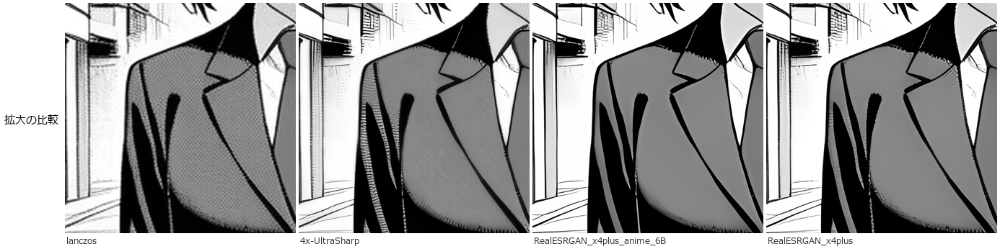

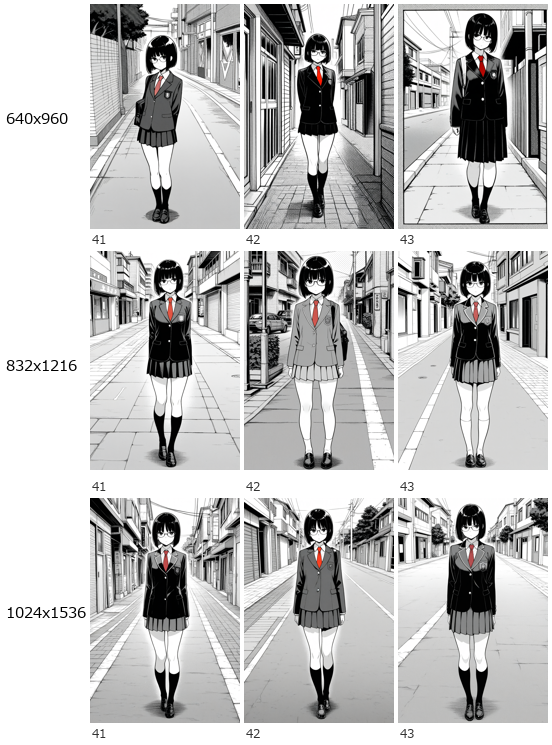
人が直した範囲をAIの描き直しから守れるか
一覧 1-24・3-13 ／ v3poc/p05_protect/
条件（何を渡して何で作ったか）
| 絵のモデル | WAI-illustrious-SDXL v1.6（SDXL系・アニメ。ファイル illustrious/waiIllustriousSDXL_v160.safetensors） |
|---|---|
| 生成の設定 | 832×1216 / euler_ancestral / normal / 25ステップ / CFG 5.0（ほかに書いていなければこれ） |
| 否定の言葉 | lowres, bad anatomy, bad hands, extra digits, fewer digits, worst quality, low quality, jpeg artifacts, signature, watermark, username, blurry |
| 元の絵 | 「指示どおりか」の試作の上半身の1枚（seed 1001）。左上の枠 (60,60)-(420,330) を人が直した範囲とした |
| 描き直させる範囲 | 正しい範囲 (0,760)-(832,1216)／誤って人の範囲に掛けた範囲 (0,250)-(832,1216) |
| プロンプト | masterpiece, best quality, manga, monochrome, greyscale, screentone, 1girl, holding a book, school blazer |
| 描き直しの強さ | denoise 0.85、seed 77 |
| 貼り戻し | 生成のあと、人の範囲の画素を元の絵からそのまま戻す（画素の処理なので、絵の中身に依らない） |
| やり方 | 人の範囲で変わった画素 | うち目に見える差 | 人の線が消えた |
|---|---|---|---|
| 描き直す範囲の指定だけ | 78% | 11% | 0.3% |
| 指定＋元の画素で貼り戻す | 0% | 0% | 0% |
| 範囲を誤って人の範囲に掛けた | 14% | 6% | 14%（画素の比較で検出できた） |


色がごてごてしないか
一覧 1-11・1-16・3-14・6-5 ／ v3poc/p07_color/
条件（何を渡して何で作ったか）
| 絵のモデル | WAI-illustrious-SDXL v1.6（SDXL系・アニメ。ファイル illustrious/waiIllustriousSDXL_v160.safetensors） |
|---|---|
| 生成の設定 | 832×1216 / euler_ancestral / normal / 25ステップ / CFG 5.0（ほかに書いていなければこれ） |
| 否定の言葉 | lowres, bad anatomy, bad hands, extra digits, fewer digits, worst quality, low quality, jpeg artifacts, signature, watermark, username, blurry |
| プロンプト | masterpiece, best quality, anime coloring, 1girl, solo, short black bob hair, glasses, school blazer, red necktie, upper body, classroom, afternoon |
| CFG | 3 / 5 / 7 / 9 / 12 |
| seed | 31〜34（CFGごとに4枚） |
| 中身 | 人物1種（眼鏡の女子生徒）だけで試した。結果は「このプロンプトではこうなった」まで |
| cfg | 3 | 5 | 7 | 9 | 12 |
|---|---|---|---|---|---|
| 彩度0.8超えの画素 | 0.0% | 0.0% | 0.1% | 2.3% | 15.9% |
- cfg 12は目で見てもごてごて。既定のcfg 5では起きない。境目は5%前後で分けられそう（絵柄1種・20枚だけ）。
- 「赤いネクタイ」の赤が眼鏡のふちに移る（色の結び付けの崩れ）。
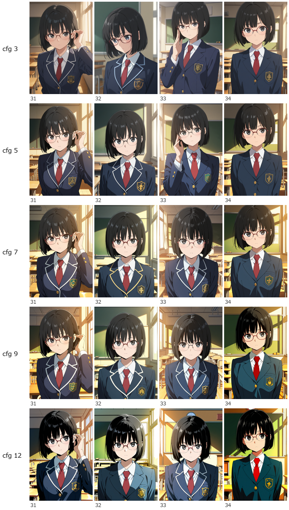
ネームのラフで構図とフキダシの場所を渡せるか
一覧 1-25 ／ v3poc/p08_rough/
条件（何を渡して何で作ったか）
| 絵のモデル | WAI-illustrious-SDXL v1.6（SDXL系・アニメ。ファイル illustrious/waiIllustriousSDXL_v160.safetensors） |
|---|---|
| 生成の設定 | 832×1216 / euler_ancestral / normal / 25ステップ / CFG 5.0（ほかに書いていなければこれ） |
| 否定の言葉 | lowres, bad anatomy, bad hands, extra digits, fewer digits, worst quality, low quality, jpeg artifacts, signature, watermark, username, blurry |
| プロンプト | masterpiece, best quality, manga, monochrome, greyscale, screentone, 1girl, solo, short black bob hair, glasses, school blazer, red necktie, full body, standing, street |
| ラフ | 下の絵。人物の枠 (150,430)-(350,1170)、フキダシの丸 (500,60)-(800,420) |
| 線画の制御 | t2i-adapter-sketch-sdxl-1.0、sai_xl_sketch_256lora。強さ 0.6 / 1.0、線の向き 白地に黒・黒地に白 |
| 骨格の制御 | thibaud_xl_openpose（非営利だけ）、t2i-adapter-openpose-sdxl-1.0。強さ 1.0 |
| 範囲の指定 | ComfyUIの標準の ConditioningSetArea で、人物の言葉を人物の枠にだけ効かせる。強さ 1.0 |
| seed | 11〜13 |
| 渡した絵 | 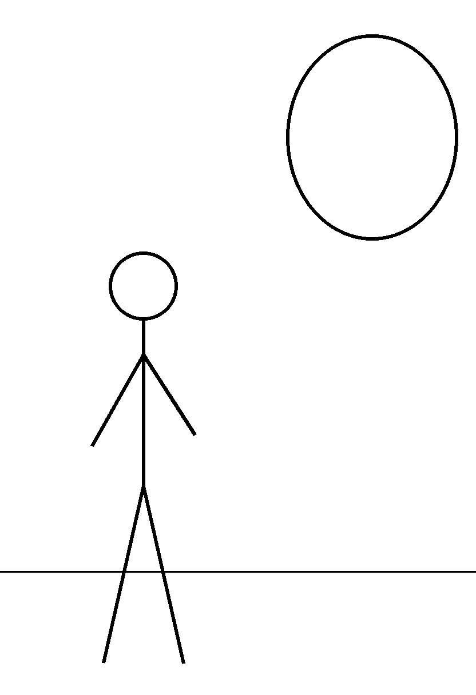 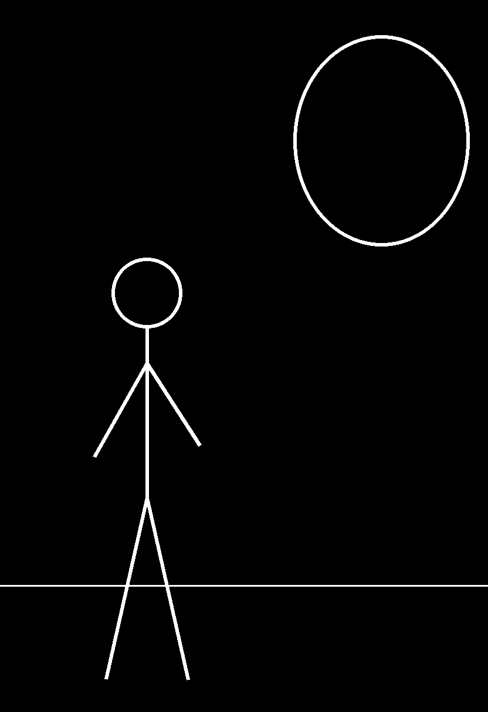 |
| 中身 | 人物1種（眼鏡の女子生徒）だけで試した。結果は「このプロンプトではこうなった」まで |


| 渡し方（人物は左寄り下半分、フキダシは右上） | 人物の枠とラフの重なり | 1枚 | 目で見て |
|---|---|---|---|
| 棒人間の線画（2種の制御×強さ×線の向き） | 0.13前後（制御なしと同じ） | 8〜25秒 | 棒人間がそのまま描かれ、丸は文字入りのフキダシになる |
| 範囲の指定だけ | 0.67 | 9.6秒 | 人物は小さく左寄り |
| 骨格の図（thibaud_xl_openpose。非営利だけで製品には使えない） | 0.63 | 16.7秒 | 骨格の位置に立つ。白い縁取りが出る |
| 骨格の図（t2i-adapter-openpose） | 0.24 | 8.3秒 | 骨格を無視して真ん中に大きく立つ |
| 範囲＋骨格 | 0.39 | 18.1秒 | 人物が崩れる・透ける |
フキダシは画像生成の範囲に入れないと決めた（絵に焼き込むと微調整できないため）。この節のフキダシの部分は使わない。
SDXL系に棒人間を渡してもまともな生成にならない（利用者の知見どおり）。どの渡し方でも、フキダシの場所には背景が描き込まれ、空かなかった。


参照画像で顔が揃うか
一覧 1-20・1-29・3-8 ／ v3poc/p09_identity/
この節の結果は易しい条件だった（参照画像と同じ言葉で作り、モデルがふだん描く見た目だった）。キャラを変え、プロンプトの寄せ方を3段にしたやり直しは P17。
条件（何を渡して何で作ったか）
| 絵のモデル | WAI-illustrious-SDXL v1.6（SDXL系・アニメ。ファイル illustrious/waiIllustriousSDXL_v160.safetensors） |
|---|---|
| 生成の設定 | 832×1216 / euler_ancestral / normal / 25ステップ / CFG 5.0（ほかに書いていなければこれ） |
| 否定の言葉 | lowres, bad anatomy, bad hands, extra digits, fewer digits, worst quality, low quality, jpeg artifacts, signature, watermark, username, blurry |
| 参照画像 | 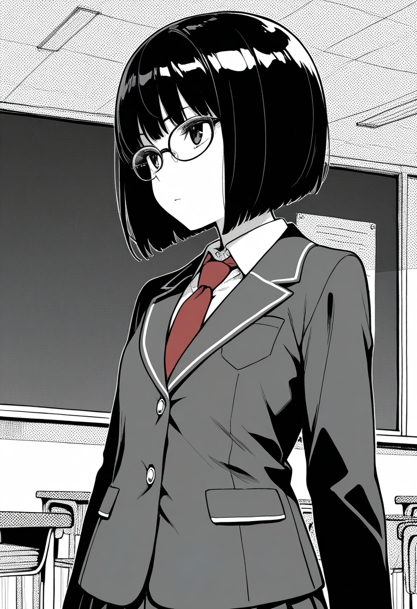 |
| 参照画像の部品 | IP-Adapter plus SDXL（ip_adapter_plus_sdxl_vit-h、Apache-2.0）＋画像の読み取り CLIP ViT-H-14（MIT）。強さ 0.5 / 0.8、linear / concat / V only |
| プロンプト | masterpiece, best quality, manga, monochrome, greyscale, screentone, 1girl, solo, ＋ キャラの説明 short black bob hair, glasses, school blazer, red necktie, pleated skirt, ＋ 場面 |
| 場面 | running, full body, street／eating bread, sitting, cafeteria, upper body／from side, profile, looking at window, upper body／laughing, close-up, park。seed 21〜23 |
| 別キャラ（対照） | キャラの説明を long blonde twintails, sailor school uniform, ribbon, に替え、参照なし |
| 判定 | 同一キャラ判定 CCIP（deepghs、OpenRAIL）で参照画像との差を測る。差が閾値 0.178 未満なら同じキャラ |
| 欠陥 | 参照画像を作ったときと同じキャラの説明を、プロンプトにも全部入れた。参照画像が効いたのか、プロンプトが寄せたのかが分からない。プロンプトをどこまで寄せる必要があるかも調べていない。やり直しは P17 |
| 中身 | 人物1種（眼鏡の女子生徒）だけで試した。結果は「このプロンプトではこうなった」まで |

| 作り方（別の場面4種×seed3） | 同じキャラと判定 | 差の平均（閾値0.178） |
|---|---|---|
| 文字だけ | 12/12 | 0.046 |
| 参照画像 0.5 | 12/12 | 0.046 |
| 参照画像 0.8 | 12/12 | 0.063（紫がかる・にじむ） |
| 別キャラ（対照） | 0/12 | 0.367 |
参照画像を同じ文字の指示から作ったので、文字だけで揃いやすい易しい条件だった。文字で言い表せない見た目のキャラは未検証。

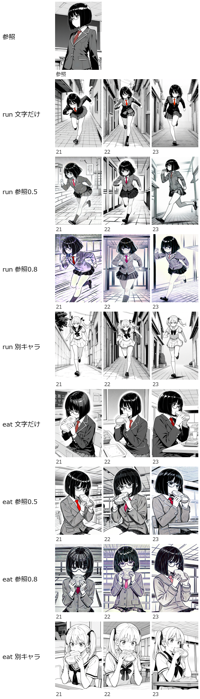

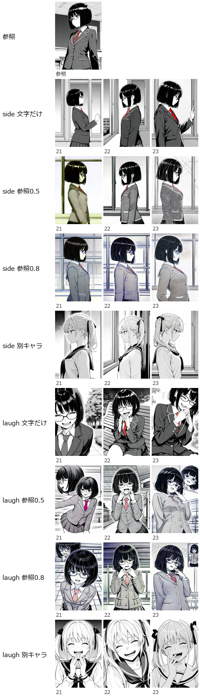
ページを1枚の絵として生成すると
一覧 1-30 ／ v3poc/p10_page/
条件（何を渡して何で作ったか）
| 絵のモデル | WAI-illustrious-SDXL v1.6（SDXL系・アニメ。ファイル illustrious/waiIllustriousSDXL_v160.safetensors） |
|---|---|
| 生成の設定 | 832×1216 / euler_ancestral / normal / 25ステップ / CFG 5.0（ほかに書いていなければこれ） |
| 否定の言葉 | lowres, bad anatomy, bad hands, extra digits, fewer digits, worst quality, low quality, jpeg artifacts, signature, watermark, username, blurry |
| プロンプト | masterpiece, best quality, comic, manga page, monochrome, greyscale, screentone, panel borders, 1girl, short black bob hair, glasses, school blazer, ＋ コマ数の言葉 |
| コマ数の言葉 | 3コマ 3 panels, vertical strip／4コマ漫画 4koma, 4 panels／6コマ multiple panels, 6 panels |
| seed | 51〜54 |
| 中身 | 人物1種（眼鏡の女子生徒）だけで試した。結果は「このプロンプトではこうなった」まで |
| 指示 | 目で数えたコマ数（seed 51〜54） | 指示どおり | MagiV2と目の一致 |
|---|---|---|---|
| 3コマ | 3・4・3・4 | 2/4 | 2/4 |
| 4コマ漫画 | 8・9・4・4 | 2/4 | 2/4 |
| 6コマ | 6・4・6・4 | 2/4 | 3/4 |
全ページのフキダシに読めない文字。同じ顔・同じ構図の人物が縦に並ぶだけのページが多い。ネームで決めた割りを守るには、コマごとに作って枠に収める方がよい。
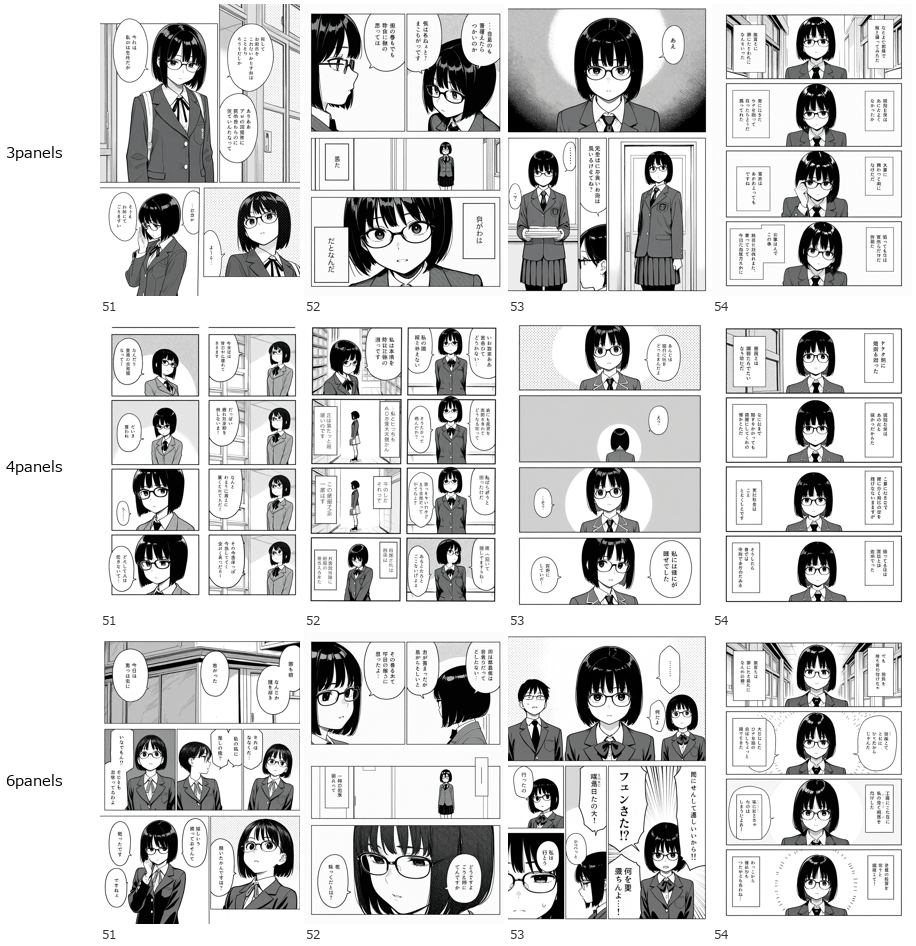
コマ割りをLLMに任せる
一覧 2-1・2-2・3-29 ／ v3poc/p12_layout/
条件（何を渡して何で作ったか）
| LLM | Claude Sonnet（Claude Code の CLI claude -p --model sonnet） |
|---|---|
| 渡したもの | 台本3本（見せ場の位置が違う）と、出させ方2種（座標を直接／段と比）の指示。指示の全文は v3poc/p12_layout/out/result.json の prompt_A・prompt_B |
| 回数 | 台本ごと・出させ方ごとに8回 |
| 出させ方（Sonnet、台本3本×8回） | 形の検査を通過 | 読む順の崩れ | 空いた場所 |
|---|---|---|---|
| 座標を直接 | 22/24 | 0 | 2 |
| 段と比（座標はプログラムで計算） | 17/24 | 7（6回は見せ場を最後にするため台本の順番を入れ替え） | 0 |
どれも段を横に割っただけの単調な割りで、利用者の目では審美的に美しくないコマが多い。機械の検査は形しか見ないので、これを全部通した。
→ 全体の課題として追加：機械の判定は単調な物を合格にしがち（課題261・一覧3-29）。
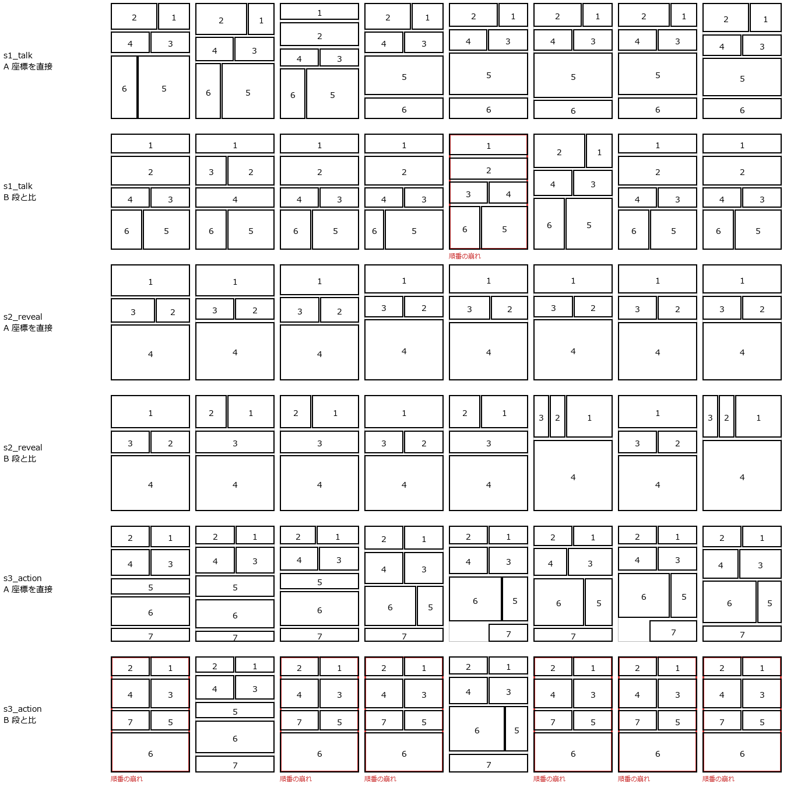
画像を見たLLMに、読む順と角度・距離を判定させる
一覧 3-17・3-19 ／ v3poc/p11_vlm_order/
条件（何を渡して何で作ったか）
| LLM | Claude Sonnet と Opus（Claude Code の CLI で画像を読ませる） |
|---|---|
| 読む順 | 番号のない四角いコマ割りの図8種（下の図はその一部）を見せて、読む順を答えさせた。各2回 |
| 向き・角度・距離 | 「指示どおりか」の試作の絵59枚を見せ、5択ずつで答えさせた。正解は Claude（Opus）の目の判定 |
- 番号の無い四角いコマ割り8種の読む順：Sonnet 16/16、Opus 14/16（横の隙間の高さがずれた割りを両方外した。人でも迷う割り）。斜めのコマは P45。
- 向き・角度・距離（5択ずつ）：Sonnet 55/59（同じ指示をまとめて見せる）、56/59（混ぜて見せる）。外れは「上半身」と「胸から上」の境目。正解がClaudeの目なので甘めの可能性。
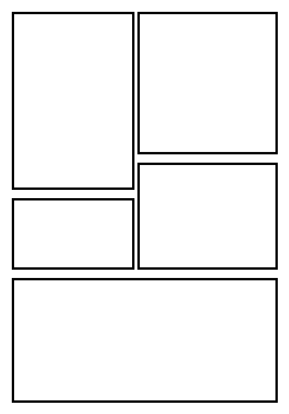
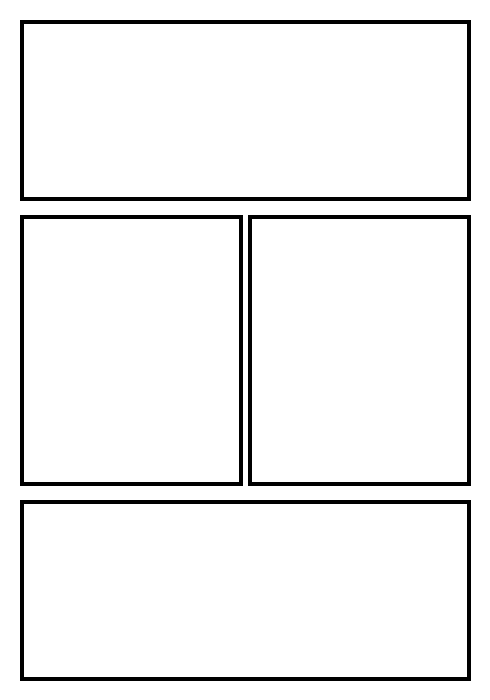
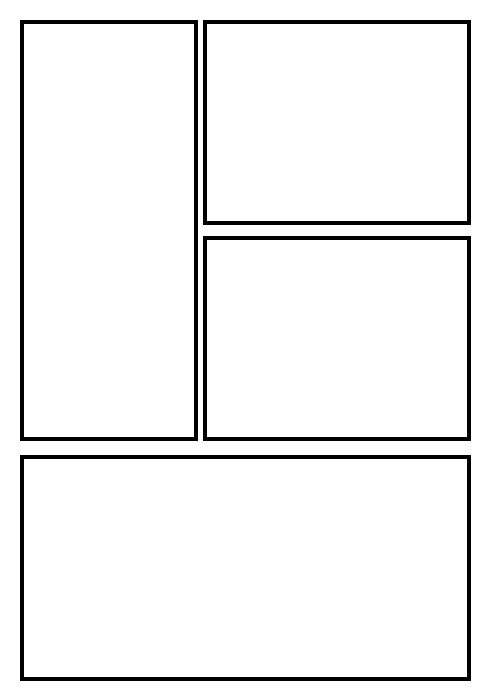
MagiV2（漫画のコマ・人物・文字の検出。非営利だけなので検証の道具としてだけ使った）
一覧 2-17・3-6・3-16 ／ v3poc/p06_magi/
条件（何を渡して何で作ったか）
| 検出のモデル | MagiV2（ragavsachdeva/magiv2。非営利だけ。文字の読み取りは切った） |
|---|---|
| 渡したページ | プログラムで描いた合成ページ4枚（四角・斜めの区切り・斜めが多い・重ね）、生成したページ12枚、実際の漫画のページ9枚（他人の作品なので載せない） |
| 合成ページ | 正解 | 検出 | 正解と重なった |
|---|---|---|---|
| 四角いコマ | 5 | 5 | 5 |
| 斜めの区切りが1本 | 4 | 4 | 4 |
| 斜めのコマが多い | 5 | 4 | 4 |
| 重ねたコマと断ち切り | 4 | 4 | 4 |
- 枠は傾かない四角だけ。斜めのコマは隣と重なった四角になり、斜めの辺は分からない。
- 生成した絵の人数：目の判定と15/16一致。
- 実際の漫画のページ9枚（斜めのコマを含む）でも同じ傾向。他人の作品なので、ここには載せない（
p06_magi/out/real_local/、リポジトリ外）。
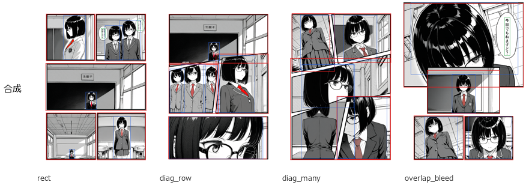
余白のあるコマを、横長・縦長の形に合わせて作れるか
一覧 1-32・1-33・1-34 ／ v3poc/p14_margin/ ／ 手ごとの設定の全部は 作り方の一覧
条件（何を渡して何で作ったか）
| 絵のモデル | WAI-illustrious-SDXL v1.6（SDXL系・アニメ）。euler_ancestral / normal / 25ステップ / CFG 5.0 |
|---|---|
| プロンプト（全部の手で同じ） | masterpiece, best quality, manga, monochrome, greyscale, screentone, city street, buildings, 1girl, solo, short black bob hair, glasses, school blazer, necktie, standing, full body, wide shot, scenery |
| コマの形と人物の枠 | 横長 1536×576（人物は右寄り）／縦長 576×1536（人物は下の真ん中）／標準 1152×896（人物は左寄り） |
| 手 | 言葉だけ／初めだけ縮小（Deep Shrink）／骨格の図4種（xinsir・xinsir 多用途版・windsingai・TencentARC。どれも Apache-2.0）／縦長で作って切り抜く／縦長で作り縮めて置き周りを描き足す |
| seed | 61〜63（手ごとに3枚） |
| 中身 | 人物1種（眼鏡の女子生徒）・場所1種（街）だけ。結果は「このプロンプトではこうなった」まで |
| 手（人物を枠の位置と大きさに置けたか） | 横長 | 縦長 | 標準 | 外れ方 |
|---|---|---|---|---|
| 言葉だけ | 0/3 | 3/3 | 0/3 | 余白は出るが、人物はほぼ真ん中に立つ。縦長は枠が真ん中なので合っただけ |
| 初めだけ縮小 | 0/3 | 3/3 | 0/3 | 言葉だけと同じ。極端な形でも人物は増えなかった（言葉だけでも増えなかった） |
| 骨格 xinsir | 0/3 | 3/3 | 2/3 | 位置は合うが、横長では3枚とも人物の周りに白い縁取り |
| 骨格 xinsir 多用途版 | 1/3 | 3/3 | 2/3 | 同じく白い縁取り |
| 骨格 windsingai（Illustrious 向け） | 3/3 | 3/3 | 3/3 | — |
| 骨格 TencentARC | 2/3 | 3/3 | 1/3 | 骨格を無視して真ん中に立つことがある |
| 切り抜く（比べるため） | 0/3 | 0/3 | 0/3 | 寄りになり余白がない |
| 描き足す | 3/3 | 2/3 | 1/3 | 描き足した所が黒や灰色の平らな面になることがある |
商用に使える骨格の制御で、人物を狙いの位置と大きさに置けた。いちばん安定したのは windsingai（9/9）。3枚ずつなので目安。


絵柄を変えて、狙いのコマ（引き・人物だけ・背景だけ）を作れるか
一覧 1-32・1-35・1-36 ／ v3poc/p15_shots/ ／ 狙いごとの作りたい絵・プロンプトの全文・大きさ・結果の全部は 作り方の一覧
条件（何を渡して何で作ったか）
| 絵のモデル | WAI-illustrious-SDXL v1.6。euler_ancestral / normal / 25ステップ / CFG 5.0。制御なし（言葉だけ） |
|---|---|
| プロンプトの組み方 | 画質 ＋ 絵柄 ＋ 狙い ＋ 人物 ＋ 場所。狙いの部品は、その狙いに要る言葉だけ |
| 絵柄の言葉 | トーン manga, monochrome, greyscale, screentone／ペン線 monochrome, greyscale, lineart, crosshatching, hatching (texture)／90年代風 monochrome, greyscale, retro artstyle, 1990s (style)／カラー anime coloring, flat color |
| 背景を抜く | ComfyUI-RMBG の BiRefNetRMBG、モデル BiRefNet_toonout（MIT） |
| seed | 71〜73（条件ごとに3枚） |
| 中身 | 人物1種（眼鏡の女子生徒）・場所1種（街）だけ。人物と場所を入れ替えた結果は P16 |
| 狙い（大きさ） | 狙いの言葉 | トーン | ペン線 | 90年代風 | カラー |
|---|---|---|---|---|---|
| 横長コマの引き（1536×576） | wide shot, scenery | 3/3 | 3/3 | 2/3 | 3/3 |
| 縦長コマの引き（576×1536） | wide shot, scenery | 3/3 | 3/3 | 3/3 | 3/3 |
| 標準コマの全身（1152×896） | full body, wide shot | 3/3 | 3/3 | 2/3 | 3/3 |
| 人物だけ（832×1216、背景を抜く） | full body, simple background, white background | 3/3 | 3/3 | 3/3 | 3/3 |
| 背景だけ・横長 | scenery, no humans | 1/3 | 3/3 | 2/3 | 2/3 |
| 背景だけ・縦長 | scenery, no humans | 1/3 | 3/3 | 2/3 | 1/3 |
| 背景だけ・標準 | scenery, no humans | 0/3 | 3/3 | 1/3 | 1/3 |
- 引きと人物だけは、ほぼ狙いどおり。ただし言葉だけでは人物はほとんど真ん中に立つ（単調になる）。
- 背景だけは、真上から見下ろす街になり、人物を立たせる地面がない絵がよく出た。ペン線だけは9枚とも地面の高さだったが、理由は分からない。
- 白黒の絵柄3種は見分けがつかないほど似た。試した言葉（3種）では、白黒の絵柄は変わらなかった。ほかの言葉で変わるかは未検証。カラーだけははっきり変わる。


人物と場所を入れ替えても、狙いの言葉が効くか
一覧 1-37 ／ v3poc/p16_general/
条件（何を渡して何で作ったか）
| 絵のモデル | WAI-illustrious-SDXL v1.6（SDXL系・アニメ。ファイル illustrious/waiIllustriousSDXL_v160.safetensors）。euler_ancestral / normal / 25ステップ / CFG 5.0。制御なし（言葉だけ） |
|---|---|
| プロンプトの組み方 | P15 と同じ「画質＋絵柄＋狙い＋人物＋場所」。絵柄は白黒トーン（manga, monochrome, greyscale, screentone）だけ。狙いの言葉と大きさは P15 のまま |
| 人物（3種） | 眼鏡の女子生徒 1girl, solo, short black hair, bob cut, glasses, school uniform, blazer, standing／パーカーの少年 1boy, solo, short hair, hoodie, jeans, sneakers, standing／背広の老人 1boy, solo, old man, grey hair, beard, suit, standing |
| 場所（3種） | 街 city street, buildings／教室 classroom, desks, windows／郊外 countryside, rice field, mountains, utility pole |
| seed | 81〜83（組み合わせごとに3枚、全108枚） |
| 判定 | 目で「狙いどおりか」（Claude が一覧画像を見て付けた。out/labels.json）。人数は検出器でも数えた |
| 狙い（大きさ） | 街 | 教室 | 郊外 | P15（街だけ・トーン） |
|---|---|---|---|---|
| 横長コマの引き（1536×576） | 8/9 | 9/9 | 9/9 | 3/3 |
| 縦長コマの引き（576×1536） | 8/9 | 1/9 | 9/9 | 3/3 |
| 標準コマの全身（1152×896） | 9/9 | 9/9 | 9/9 | 3/3 |
| 背景だけ・横長 | 1/3 | 3/3 | 3/3 | 1/3 |
| 背景だけ・縦長 | 1/3 | 0/3 | 2/3 | 1/3 |
| 人物だけ（832×1216、場所なし） | 8/9（人物3種） | 3/3 | ||
- 縦長のコマで場所を教室にすると、1枚の中にコマが縦に2〜4段並んだ絵になった（引き 9枚中7枚、背景だけ 3枚中3枚）。P15 の街だけでは1回も起きなかった。場所を変えるだけで、同じ狙いの言葉が効かなくなる。
- 標準の全身と横長の引きは、人物と場所を変えてもほぼ狙いどおり（横長の失敗1枚は人物が2人）。
- 背景だけの街は、ここでも真上から見下ろす絵が多い（P15 と同じ）。教室と郊外は地面の高さで描かれた。
- 絵の構図は seed で決まる傾向が強い。同じ seed なら、人物を変えても似た構図になった（街の seed 82 は3人とも傾いた見下ろし、全身の seed 82 は3人とも真ん中に立つ一点透視）。うまくいった seed を別の中身に使い回すと、同じ構図が並んで単調になる。
- 人物だけの背広の老人（seed 81）に読めない文字が入り、背景を抜いても文字が残った。
- 検出器は、横長の引きで人物の高さがコマの約3分の1より小さいと人物を見落とした（「人0」と出た8枚は、どれも人物が1人いる）。小さい人物の数を検出器だけで確かめることはできない。

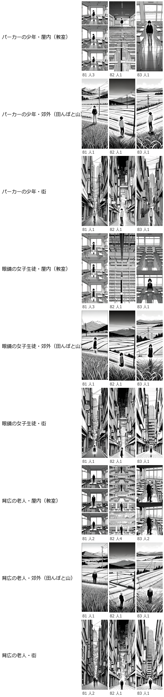

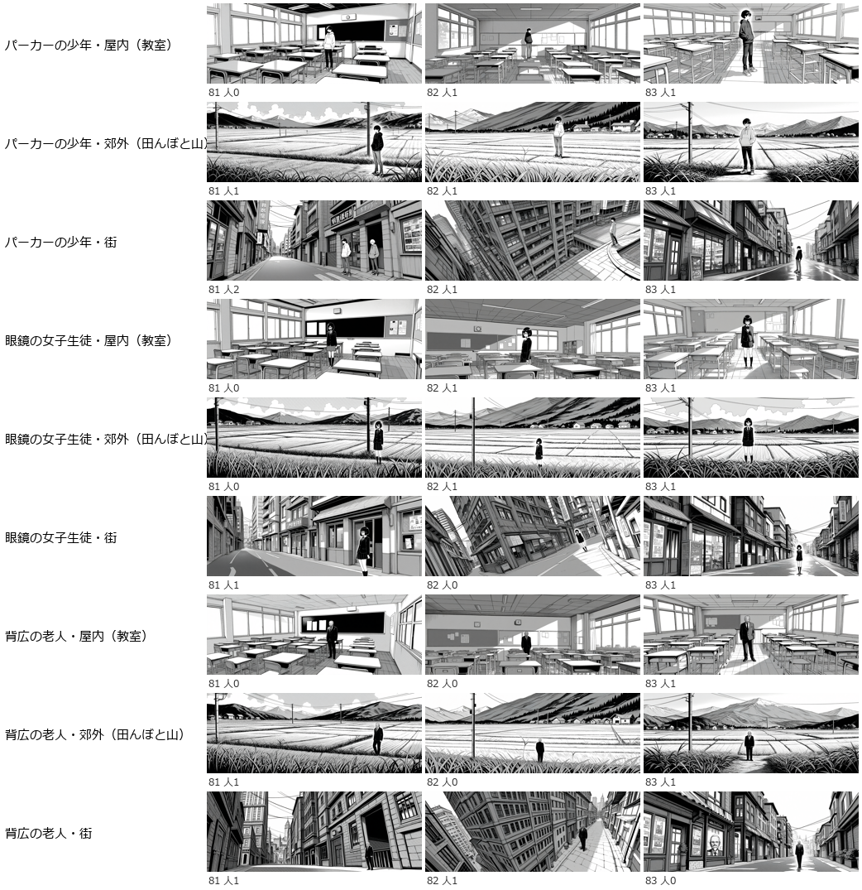

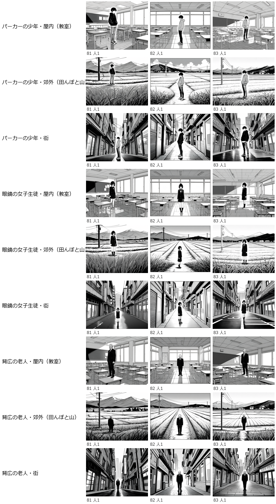

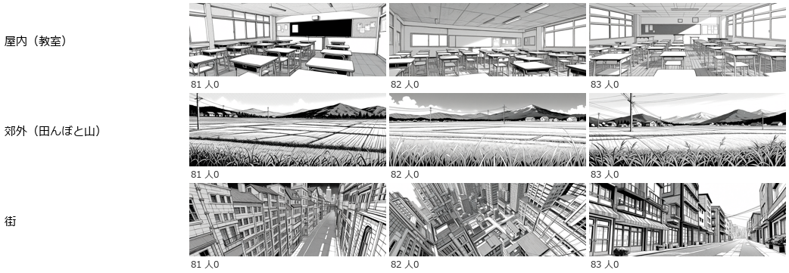

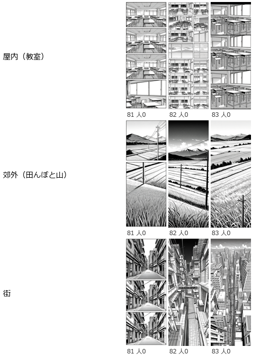

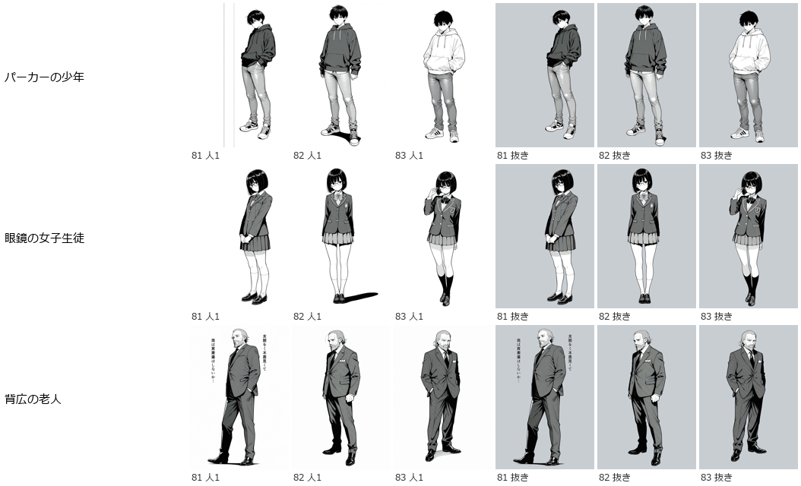
顔を揃えるのに、プロンプトをどこまで寄せる必要があるか（P09 のやり直し）
一覧 1-29・1-20・3-8 ／ v3poc/p17_identity2/
条件（何を渡して何で作ったか）
| 絵のモデル | WAI-illustrious-SDXL v1.6（SDXL系・アニメ。ファイル illustrious/waiIllustriousSDXL_v160.safetensors）。euler_ancestral / normal / 25ステップ / CFG 5.0。832×1216 |
|---|---|
| キャラ（2人） | a 白髪の三つ編みの女性、b 眼帯の男性。どちらもモデルがふだん描かない見た目にした（P09 の黒髪の女子生徒は、言葉が無くても出やすかった） |
| 参照画像 | キャラごとに1枚。全部の特徴の言葉 ＋ upper body, looking at viewer, simple background, white background、seed 101 で作った（下の図の1行目）。a： 1girl, solo, white hair, long hair, twin braids, red eyes, freckles, star hair ornament, black hoodie, chokerb： 1boy, solo, messy hair, brown hair, short hair, scar on cheek, eyepatch, green jacket, white shirt |
| プロンプトの寄せ方（3段） | 性別だけ（1girl, solo など）／性別＋髪（a white hair, long hair, twin braids、b messy hair, brown hair, short hair）／性別＋全部の特徴（参照画像と同じ言葉）。前に画質と絵柄 masterpiece, best quality, manga, monochrome, greyscale, screentone、後ろに場面 |
| 場面（3種） | 走る running, full body, street／食べる eating bread, sitting, cafeteria, upper body／横顔 from side, profile, looking at window, upper body |
| 参照画像の部品 | なし／IP-Adapter plus SDXL（ip_adapter_plus_sdxl_vit-h、Apache-2.0）＋ clip_vision_h（MIT）、強さ 0.5・0.8。顔専用の FaceID は insightface が非商用なので外した |
| seed | 21〜23（条件ごとに 場面3 × seed3 ＝ 9枚、全162枚） |
| 判定 | 目で「目立つ特徴が見えるか」（Claude が一覧画像を見て付けた）と、同一キャラ判定 CCIP（dghs-imgutils、閾値0.178）で参照画像と比べた |
| 寄せ方 | 参照 | a 目で見て同じ | a CCIP 同じ | b 目で見て同じ | b CCIP 同じ |
|---|---|---|---|---|---|
| 性別だけ | なし | 0/9 | 0/9 | 0/9 | 7/9 |
| 0.5 | 0/9 | 0/9 | 0/9 | 6/9 | |
| 0.8 | 0/9 | 0/9 | 0/9 | 5/9 | |
| 性別＋髪 | なし | 0/9 | 6/9 | 0/9 | 9/9 |
| 0.5 | 0/9 | 2/9 | 0/9 | 9/9 | |
| 0.8 | 0/9 | 0/9 | 0/9 | 9/9 | |
| 性別＋全部の特徴 | なし | 9/9 | 9/9 | 8/9 | 9/9 |
| 0.5 | — | 8/9 | — | 9/9 | |
| 0.8 | — | 7/9 | — | 7/9 |
「—」は、特徴は出ているが色が乗って絵が崩れたので、揃ったかを数えなかった所。
- 寄せる所：見た目の特徴を全部、毎回言葉で書く必要があった。性別だけでは別人（黒髪のよくある顔）になり、髪まで書いても目の色・髪飾り・眼帯・服が出ない。全部書くと a 9/9、b 8/9（外した1枚は横顔で眼帯の側が見えない）。
- 参照画像の部品（IP-Adapter plus）は言葉の代わりにならなかった。性別だけに足すと白い髪は寄るが、三つ編み・髪飾り・眼帯は出ない。強さ0.5でも白黒の指定なのに青・緑・紫の色が乗り、線がにじむ。全部の特徴を書いた上に足しても良くならない。
- 特徴の言葉に色が入ると（
red eyes・green jacket）、白黒の指定でもその色が残った。P07 の赤いネクタイと同じことが、別の人物でも起きた。 - 同一キャラ判定 CCIP は、髪が似ていれば別人でも「同じ」と出た（b は性別だけの黒髪の別人でも 7/9）。別キャラの参照画像と「同じ」と出たことは162枚で0回。「違う」は信じてよいが、「同じ」だけでは同じキャラと決められない。
- 限界：モデル1つ・キャラ2人・特徴の言葉で言い表せる見た目だけ。言葉で言い表せない顔立ち（目の形・輪郭）は未検証。追加学習（1-29 の比較）は未実施。

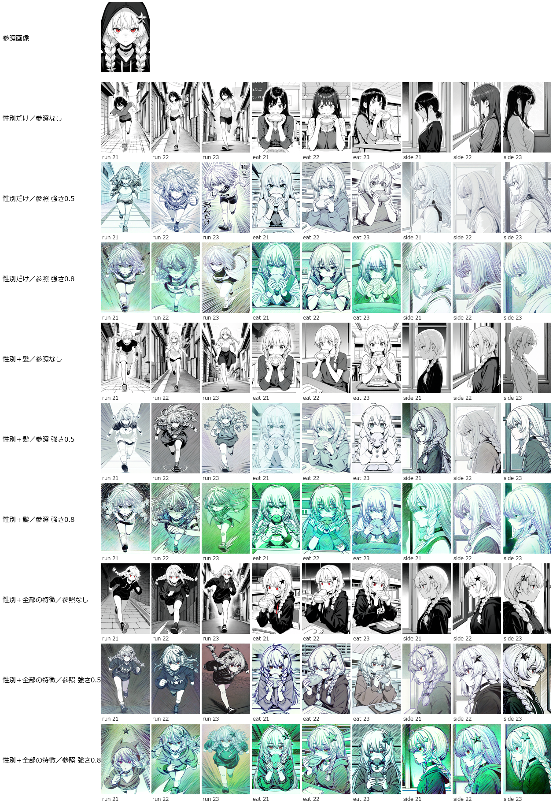

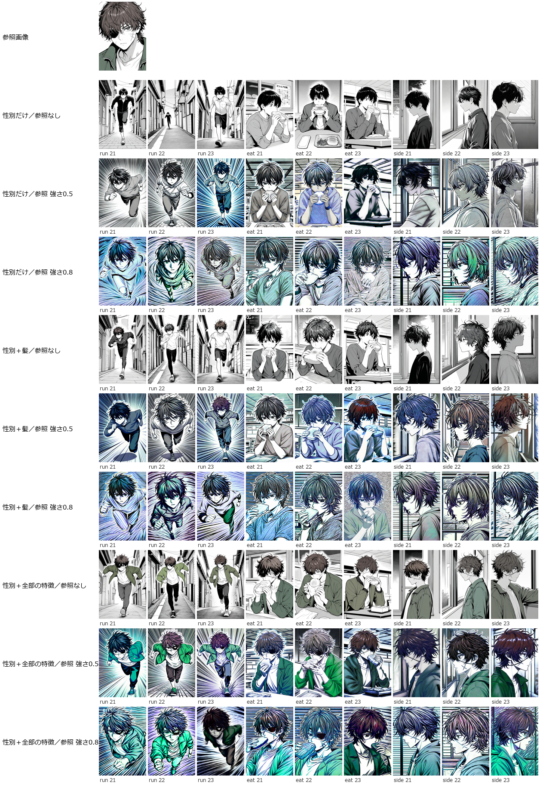
背景の不揃いを、3Dの場所で解消できるか
一覧 1-38 ／ v3poc/p18_bg_consistency/ ／ 方針20、候補96〜103
条件（何を渡して何で作ったか）
| 絵のモデル | WAI-illustrious-SDXL v1.6（SDXL系・アニメ。ファイル illustrious/waiIllustriousSDXL_v160.safetensors）。euler_ancestral / normal / 25ステップ / CFG 5.0。1152×896 |
|---|---|
| プロンプト | 教室 masterpiece, best quality, manga, monochrome, greyscale, screentone, scenery, no humans, classroom, desks, chalkboard, windows, indoors街 …, scenery, no humans, city street, buildings, road, utility pole。否定に 1girl, 1boy, people を足した |
| 3Dの場所 | 箱だけで組んだ教室（幅8m・奥行き10m、左の壁に窓、前に黒板、後ろにロッカー、机3×3）と街（真ん中の道、両側に高さの違う建物、右に電柱）。scene3d.py（numpy だけ、外の3Dソフトなし）で3つの向き（front・side・back）から奥行きの図と線画を書き出した（下の図の1行目） |
| 手 | 言葉だけ／奥行き（xinsir 多用途版の depth、Apache-2.0、強さ0.8、効かせる終わり0.8）／線画（同じ部品の lineart、白黒を反転して渡す）／奥行き＋参照（front の絵を IP-Adapter plus 強さ0.5 で足す。side・back だけ） |
| seed | 91〜93（手・向きごとに3枚、全66枚） |
| 測り方 | 線の重なり＝3Dの線のうち、生成した絵の輪郭が3画素以内にある割合。同じ絵を別の向きの3Dの線とも比べ、その差を見る（候補101） |
| 手 | 間取りが揃う（目） | 線の重なり 教室（別の向き） | 線の重なり 街（別の向き） |
|---|---|---|---|
| 言葉だけ | —（向きを言い分けられない） | 0.49（0.49） | 0.47（0.47） |
| 奥行き | 18/18 | 0.98（0.46） | 0.79（0.56） |
| 線画 | 18/18 | 0.97（0.46） | 0.84（0.55） |
| 奥行き＋参照 | 12/12 | 0.94（0.39） | 0.77（0.60） |
- 3Dの場所から書き出した奥行きか線画を渡すと、壁・床・天井の境目、机の数と位置、道の向き、建物の並びが、向きを変えても3Dどおりに揃った（両方の手で18/18）。
- 言葉だけでは向きを言い分けられず、同じ seed なら3つの向きで同じ絵になった。seed を変えると、窓の数・黒板の大きさ・照明の並びが違う別の教室になる（コマごとに別の部屋になる）。
- 壁に何を描くかは揃わない。後ろの壁（3Dではロッカー）には9枚とも黒板が描かれ、窓の壁にも黒板が描かれ、窓が左右逆の壁に出ることも多い。原因は、3Dの箱が面に何があるかを持たないことだと考えるが、未検証（→候補102・103）。
- 机は脚のない箱のまま描かれた。3Dの箱の形をそのまま写すので、3Dを粗く作るとそのまま絵に出る。
- front の絵を参照画像にしても質感は揃わず、白黒の指定なのに水色・緑が乗った（候補99は効かなかった）。
- 線の重なりは、自分の向きの線と別の向きの線で 0.79〜0.98 と 0.39〜0.60 に分かれ、間取りが3Dどおりかの検査に使えるかもしれない（候補101、この試作だけ）。窓の所に黒板が描かれた絵でも重なりは高いままで、窓か黒板かの違いは数値に出なかった。

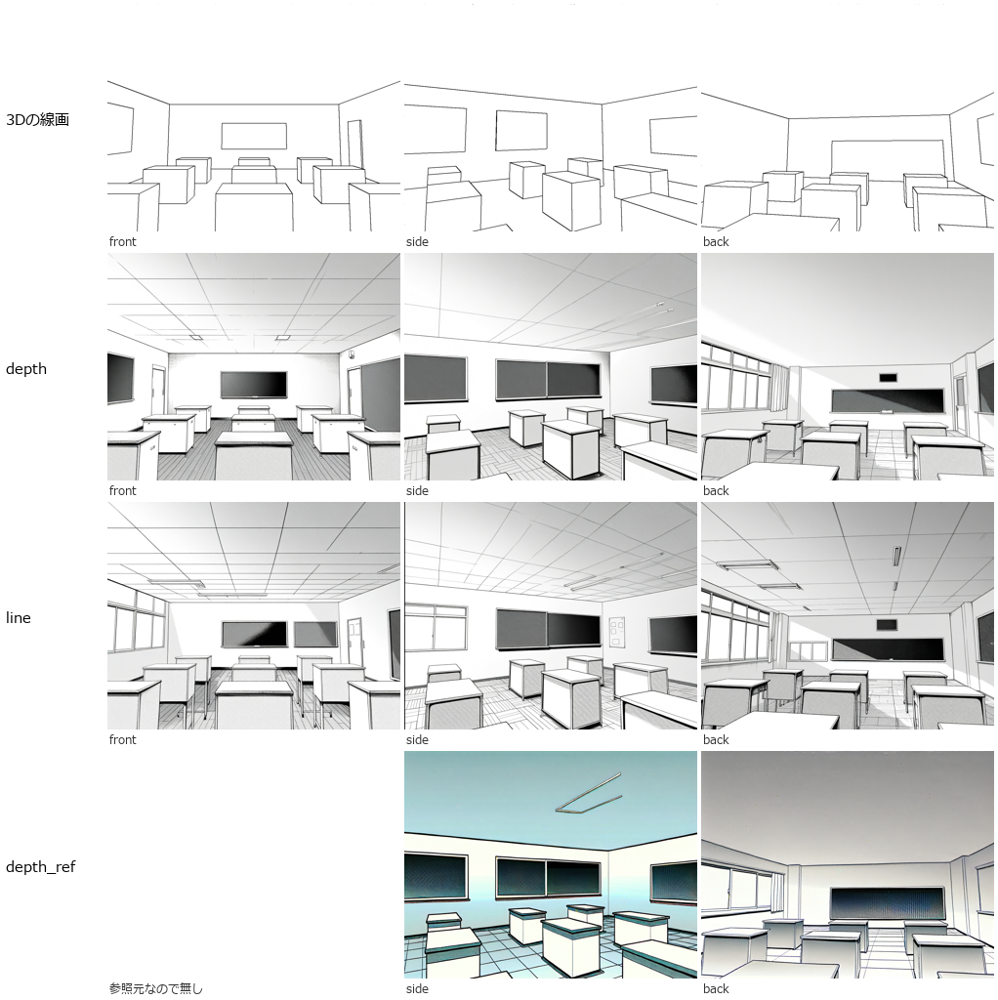

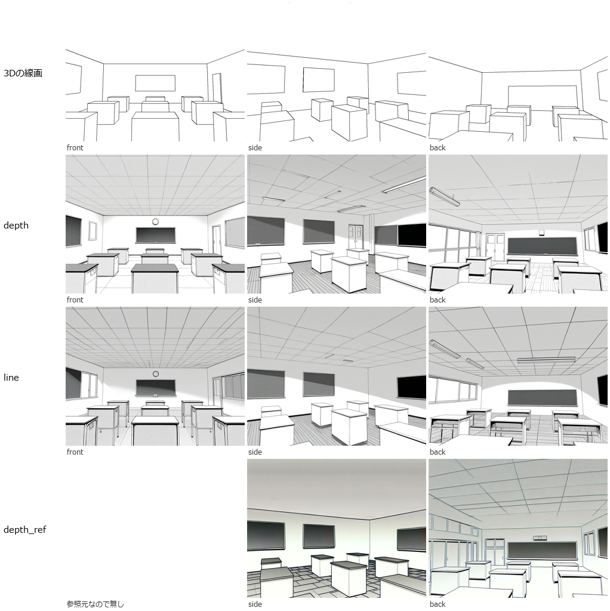

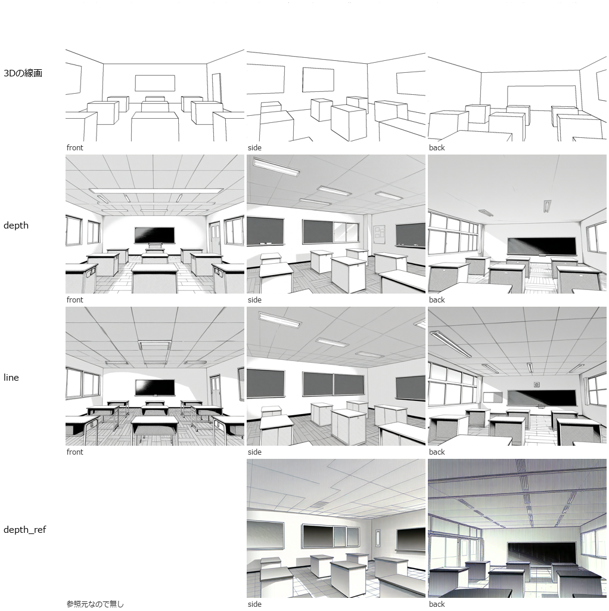

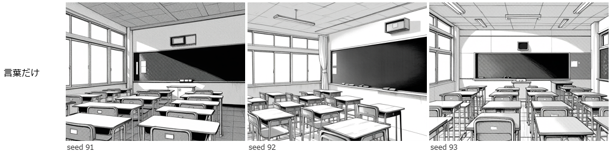

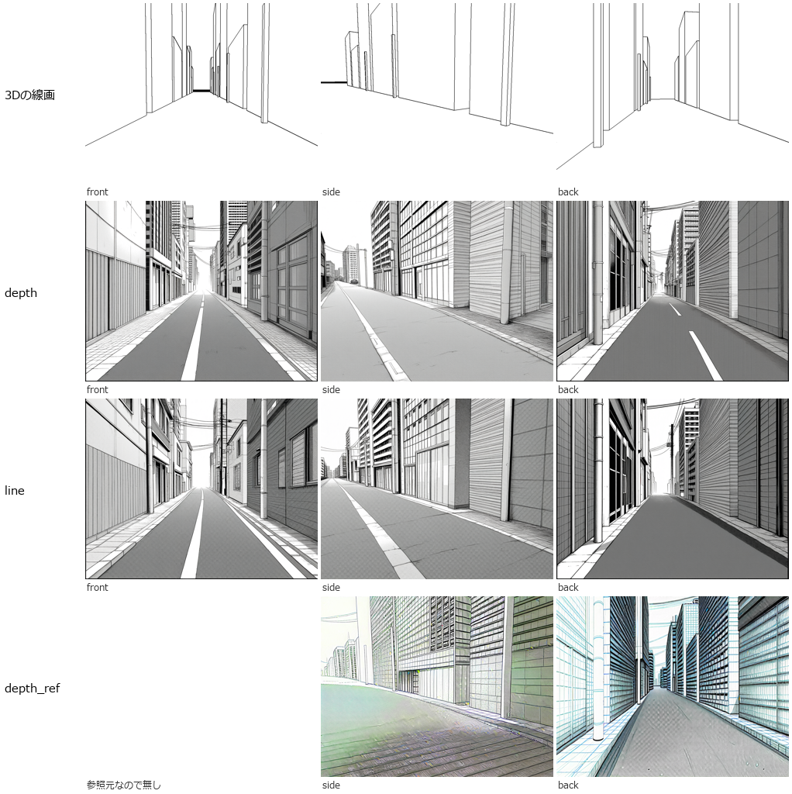

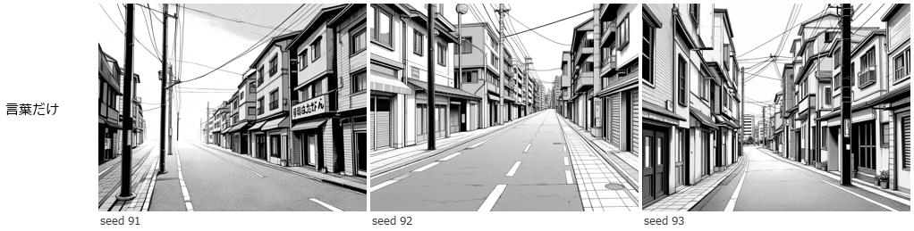
表情を言葉で描き分けられるか・強さを比べて判定できるか
一覧 1-6・1-20・3-20 ／ v3poc/p19_expression/
条件（何を渡して何で作ったか）
| 絵のモデル | WAI-illustrious-SDXL v1.6（ファイル illustrious/waiIllustriousSDXL_v160.safetensors）。euler_ancestral / normal / 25ステップ / CFG 5.0。832×1216 |
|---|---|
| キャラ | P17 の2人（a 白髪の三つ編みの女性、b 眼帯の男性）。特徴の言葉は全部入れた |
| プロンプト | 画質・絵柄 masterpiece, best quality, manga, monochrome, greyscale, screentone ＋ キャラの言葉 ＋ 表情の言葉 ＋ upper body, looking at viewer, classroom |
| 表情の言葉（弱・中・強） | 無表情 expressionless喜 slight smile／smile, happy／laughing, open mouth, very happy怒 annoyed, frown／angry／furious, shouting, clenched teeth哀 sad, downcast eyes／sad, teary eyes／crying, tears, sobbing驚 slightly surprised／surprised, open mouth／shocked, wide-eyed, gasping |
| 参照画像の部品 | 強の段と無表情にだけ、P17 の参照画像を IP-Adapter plus 強さ0.5 で足した（1-20） |
| seed | 31〜33（全108枚） |
| LLMの判定（3-20） | Claude Sonnet（Claude Code の claude -p）に、2枚ずつ「どちらの表情に感情が強く表れているか」と、各画像の感情の種類を答えさせた。組は無表情と弱・弱と中・中と強・弱と強・強と強＋参照。左右を入れ替えて2回聞き、食い違ったら引き分け。画像は名前を伏せた写しを見せ、組の並びも混ぜた |
| 感情 | 弱→中→強が見て順に並ぶ（目、6組） | LLM が狙いの順と一致（弱と中） | LLM（中と強） | LLM（無表情と弱・弱と強） |
|---|---|---|---|---|
| 喜 | 6/6 | 5/6 | 6/6 | 12/12 |
| 怒 | 3/6（a は弱と中が同じくらい） | 4/6 | 6/6 | 12/12 |
| 哀 | 1/6（弱と中がほぼ同じ） | 4/6 | 5/6 | 10/12 |
| 驚 | 0/6（弱の言葉で既に目を見開く） | 6/6 | 2/6 | 12/12 |
- 1-6：無表情と強い表情は24/24で見分けられる。崩れて見えるほど極端な顔は無かった。ただし段の描き分けは感情で違い、喜は3段が見て分かるが、驚は弱い側が作れない（
slightly surprisedでもう目を見開いて口を開ける）。哀は弱と中がほぼ同じ。 - 3-20：名前を伏せた LLM の「どちらが強いか」は、狙いの順と96組中84組で一致、引き分け9、逆3。左右を入れ替えても同じ答えだったのは88組。外れと引き分けは、目でも差が見分けにくい組（驚の中と強、哀の弱と中）に集まった。感情の種類は、のべ240回の答えのうち233回が狙いどおり（外れは、弱い怒・弱い哀を無表情としたものと、無表情と哀の取り違え）。
- 最初の判定では、ファイル名に感情と段が入ったまま見せていた（96組中92組が一致）。名前から順が読めるので、この数字は使わない（
out/judge_sonnet_namesvisible.jsonに残した）。 - 1-20：参照画像の部品を足すと、LLM は24組中18組で「参照なしの方が強い」とした。目でも a は表情が弱まった（笑わない・怒らない）。b は保たれた。どちらも白黒に色が乗った。
- b の眼帯が、絵によって左右どちらの目にも付いた。同一キャラ判定は、参照なしの b の39枚をすべて同じキャラとした（差は最大0.057、閾値0.178）。その中に眼帯が左右逆の絵が入っていた。左右の違いを見分けられるかは未検証。
- 限界：目の判定は Claude が付けた（漫画を描く人ではない）。LLM の判定の正解も「狙いの段」と Claude の目で、人の判定と比べていない。場面は上半身・正面だけ。

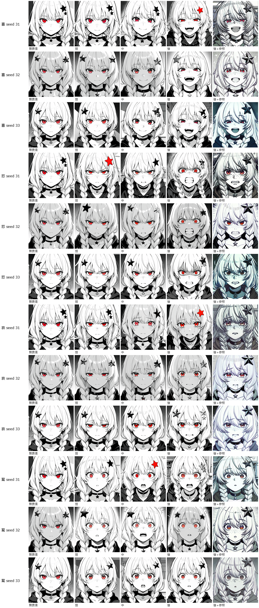

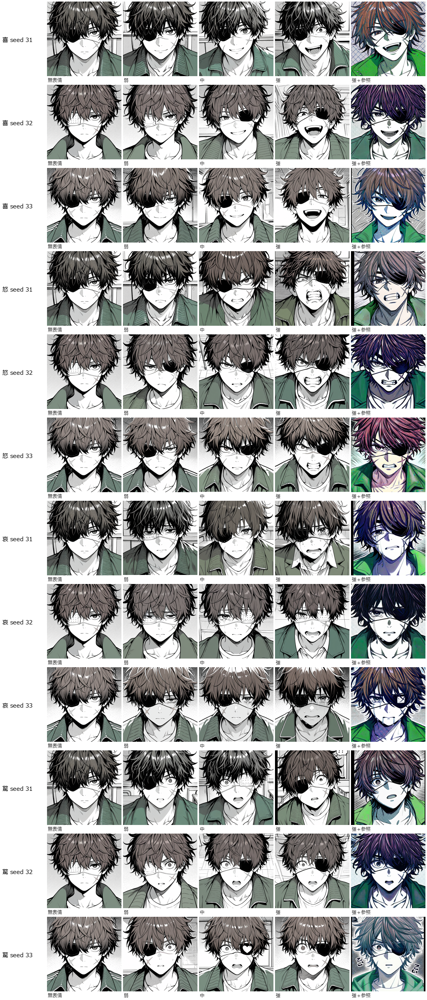
線画・ベタ・トーン・着彩を別々に作れるか
一覧 1-27 ／ v3poc/p20_layers/
条件（何を渡して何で作ったか）
| 絵のモデル | WAI-illustrious-SDXL v1.6。euler_ancestral / normal / 25ステップ / CFG 5.0。プロンプトと seed は各フォルダの out/gen.json |
|---|---|
| 手1 後から分ける | トーンの絵から、線画を取り出す部品（Manga2Anime・AnimeLineArt）で線を抜き、濃さでベタ（50未満）とトーン（50〜215）に分ける |
| 手2 先に線画 | 線画だけの絵を作り、多用途の制御（xinsir union、Apache-2.0）で渡してトーンの絵・カラーの絵を作る |
| 場面 | 机の人物・走る人物・部屋の背景 × seed 3 |
| 測った物 | 結果 |
|---|---|
| 分けた3層を重ね直した絵と元の絵の差 | 平均 6.2/255（Manga2Anime）・6.3/255（AnimeLineArt） |
| 線画の線が、トーンの絵・カラーの絵で保たれた割合 | 0.952・0.971 |
- 後から分ける手：Manga2Anime の線はきれい。AnimeLineArt は網の模様まで線として拾う。ベタに背景の暗いぼかしが混じる。トーンは網点ではなく灰色の階調。
- 先に線画の手：線画の絵自体に灰色の塗りが入る（机の場面で中間の灰色が29〜33%）。そのため線画の層をカラーの上に重ねると塗りが黒くなる。線画から作ったトーンの絵に色が漏れた（赤い目、走る場面は3枚とも上着と髪に色）。
- 線画からカラーは線によく沿う。

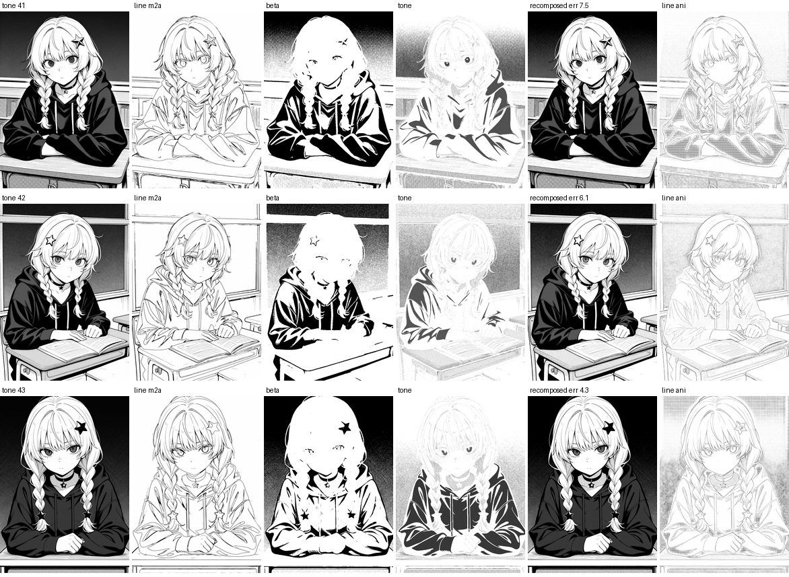

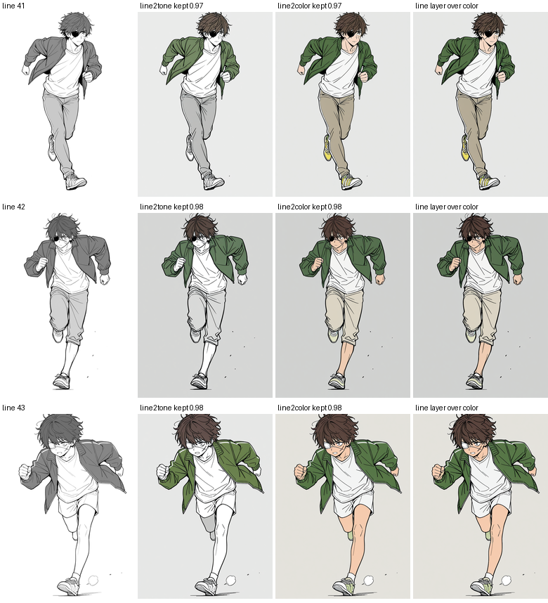
手の崩れの割合・男性キャラで質が落ちないか
一覧 1-3・1-10・1-8・3-23 ／ v3poc/p21_hands/
条件（何を渡して何で作ったか）
| 絵のモデル | WAI-illustrious-SDXL v1.6。euler_ancestral / normal / 25ステップ / CFG 5.0。プロンプトと seed は各フォルダの out/gen.json |
|---|---|
| 中身 | 手の見える動作6種 × 女性2人（f1・f2「大人の女性」）・男性2人（m1・m2）× seed 3 = 72枚。手は原寸で切り出して目で見た |
| 人物 | 手の崩れなし | 一部崩れ | 崩れ | 美しさの採点（百分位） |
|---|---|---|---|---|
| f1 | 14 | 4 | 0 | 0.824 |
| f2 | 13 | 3 | 2 | 0.97 |
| m1 | 18 | 0 | 0 | 0.273 |
| m2 | 16 | 2 | 0 | 0.197 |
- 男性の手は女性より崩れない（34/36 と 27/36）。
- m1 がスカートを履いた・少女になったのが18枚中2枚。m2 は seed 53 で幼く見えるのが5枚。f2（大人の女性）は18/18で胸が誇張され、年齢区分の判定器は15/18を r15 とした（f1 1/18、男性0）。
- 美しさの採点器は女性・肌の多い絵を高く付けた。手が崩れた絵（0.797）を崩れなし（0.524）より高くした。
- 頼んでいない文字が72枚中10枚。
- 動作（1-5）：72枚中71枚が指示どおり（外れは腰に手が太ももに手になった1枚）。手を振るが後ろ姿になったのが12枚中2枚、片手だけが1枚。m2 は seed ごとに別人（年配・金髪の年配・若い）。

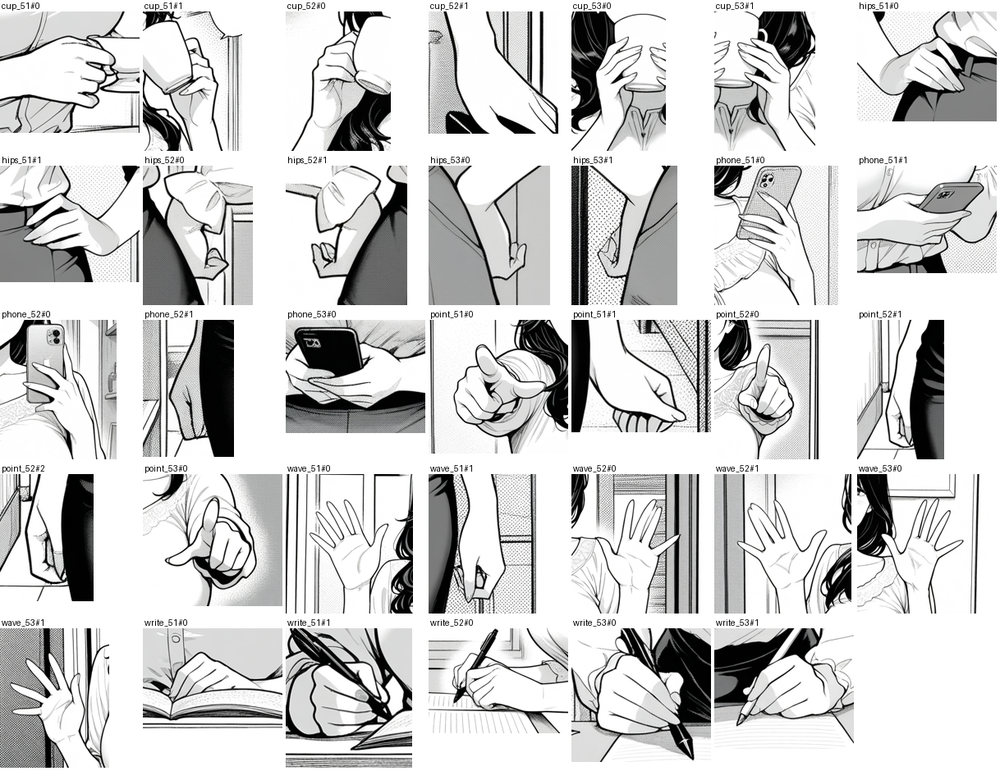

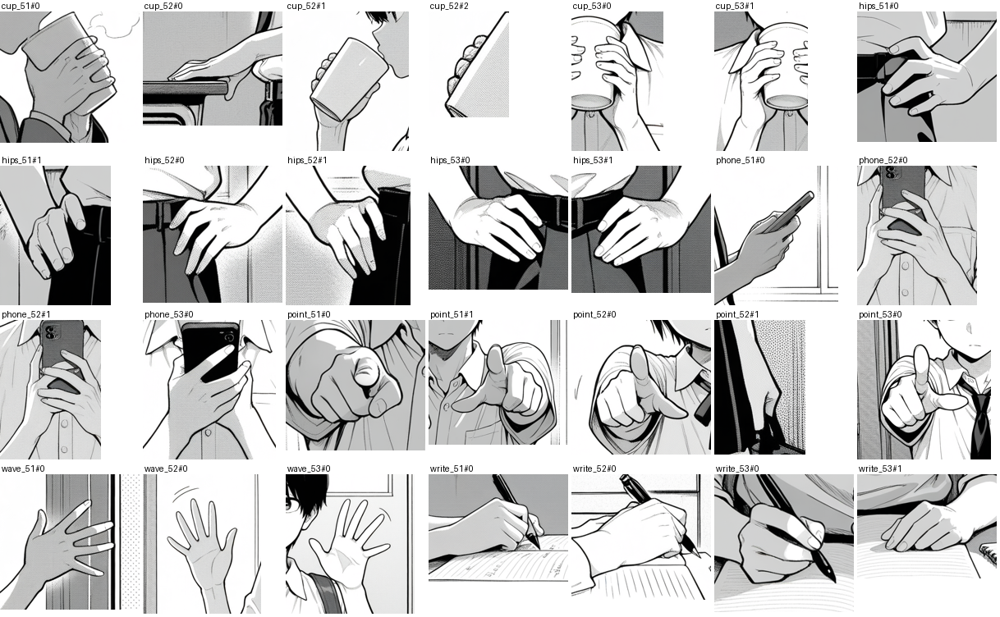
頼んでいないフキダシと文字を防げるか・見つけられるか
一覧 1-22・3-15 ／ v3poc/p22_balloon/
条件（何を渡して何で作ったか）
| 絵のモデル | WAI-illustrious-SDXL v1.6。euler_ancestral / normal / 25ステップ / CFG 5.0。プロンプトと seed は各フォルダの out/gen.json |
|---|---|
| 中身 | 会話・叫ぶ・掲示のある駅 × 否定の言葉（なし／あり）× seed 8 |
| 場面 | 否定の言葉なし | あり |
|---|---|---|
| 会話 | 8/8 がフキダシだらけの複数コマのページ | 8/8 同じ |
| 叫ぶ（文字あり） | 5/8 | 4/8 |
| 掲示（駅の看板） | 8/8 | 5/8 |
| 文字の検出器の閾値 | 見つけた（38枚中） | 見逃し | 誤り（文字なし10枚） |
|---|---|---|---|
| 0.05（既定） | 33 | 5 | 3 |
| 0.1 | 31 | 7 | 2 |
| 0.2 | 24 | 14 | 1 |
- 否定の言葉は効かない。会話の場面は言葉だけではコマ1つの絵にならない。
- 吹き出しが顔を隠しているかは P47。


2人を描いたとき特徴が混ざらないか・髪の色で見分けられるか
一覧 1-19・3-9 ／ v3poc/p23_two_chara/
条件（何を渡して何で作ったか）
| 絵のモデル | WAI-illustrious-SDXL v1.6。euler_ancestral / normal / 25ステップ / CFG 5.0。プロンプトと seed は各フォルダの out/gen.json |
|---|---|
| 中身 | 組3種（P17 の2人 ab／似た女子生徒2人 sim／カラーの2人 color）× 書き方（1つの文に全部／左右の範囲ごとに文、ComfyUI 標準の範囲指定）× seed 6 |
| 組 | 1つの文 | 範囲ごと |
|---|---|---|
| color | 正しい0（左右入れ替わり4・混ざり3） | 6/6 |
| ab | 2/6（混ざり4） | 3/6（3枚が複数コマのページ） |
| sim | 1/6（混ざり5） | 2/6（4枚が複数コマのページ） |
- 3-9：頭を検出して髪の色相を比べる手で、左右どちらが誰かを目と12/12で一致した。
- 白黒で範囲ごとに文を当てると、1枚が複数コマのページになりやすい。


デフォルメ・ぼかした参照画像で別人にならないか
一覧 1-21 ／ v3poc/p24_deform/
条件（何を渡して何で作ったか）
| 絵のモデル | WAI-illustrious-SDXL v1.6。euler_ancestral / normal / 25ステップ / CFG 5.0。プロンプトと seed は各フォルダの out/gen.json |
|---|---|
| 中身 | P17 の2人。手1 デフォルメの言葉（chibi）seed 6。手2 参照画像の部品（IP-Adapter plus 強さ0.5）にそのまま／ぼかして縮めた参照画像 seed 3。判定は同一キャラ判定（CCIP、閾値0.178）と目 |
- 同一キャラ判定：デフォルメ12/12、通常12/12、きれいな参照 a 2/3・b 3/3、ぼかした参照 a 3/3・b 3/3。
- 目でもデフォルメで特徴は残った。
- パーカーに英字（SUPER など）が勝手に入る。参照画像を使うと色が乗る（P17 と同じ）。ぼかした参照だと b の髪の色がぶれる。


画風がずれないか・写実に寄らないか・光の向き
一覧 1-12・1-18・3-10 ／ v3poc/p25_style_light/
条件（何を渡して何で作ったか）
| 絵のモデル | WAI-illustrious-SDXL v1.6。euler_ancestral / normal / 25ステップ / CFG 5.0。プロンプトと seed は各フォルダの out/gen.json |
|---|---|
| 中身 | P17 の a を8場面 × seed 2。写実の言葉を足した4枚。光の言葉なし／左から／右から × seed 4 |
- 8場面で画風は目で揃った。
- 写実の判定器は平均0.024。写実の言葉を足しても0.009〜0.019で反応しない。目では顔が少し写実に寄った。写実の言葉の4枚中3枚に文字が入った。
| 光の言葉 | 左から光 | 右から光 | 分からない |
|---|---|---|---|
| なし | 2 | 0 | 2 |
| 左から | 2 | 2 | 0 |
| 右から | 3 | 1 | 0 |
光の言葉は効かない。明るい側は seed ごとの窓の位置に従った。


画像編集で写真風にならないか・背景が勝手に変わらないか
一覧 1-15・1-17 ／ v3poc/p26_edit/
条件（何を渡して何で作ったか）
| 編集のモデル | Qwen-Image 2.1（int8。Qwen Research License で非商用）。ComfyUI 標準の編集の文の部品に元の絵を渡す |
|---|---|
| 中身 | P17 の a（食べる）と b（走る）× 編集5種（物を持たせる・笑わせる・座らせる・後ろ向き・海辺の背景）× seed 2。20枚の予定で14枚まで作った |
- 写真風になったのは0。同一キャラ判定は14/14で同じ人。
- カップを持たせる・笑わせる（b）は、ほかを保ったまま効いた。後ろ向きは効いた（1枚で三つ編みが消えた）。
- 海辺の背景に変えると背景だけカラーになり、白黒の人物と合わない。
- 座らせる編集は、元の絵が既に座っていて試せなかった（課題の選び方の誤り）。a の笑顔はパンで口が隠れて見えない。
- 人物の外の画素の変化（0.15〜0.25）は、出力が32の倍数に丸められ（1216→1248）位置がずれるので使えない。
- b の座る・後ろ向き・背景の6枚は、画像生成を止めたので作っていない。


LLMのネームを機械で数える
一覧 2-3〜2-16 ／ v3poc/p27_name/
条件（何を渡して何で作ったか）
| LLM | Claude Sonnet（claude -p）。港の話8ページ・学校の話6ページ × 3回。プロンプトは out/prompt.json |
|---|
| 数えた物 | 6つのネーム |
|---|---|
| 読む順の崩れ | 5つで0。1つは段の中を左から書いた（書き方の揺れ） |
| 同じ段の割りが次のページに続く | 1〜5回（港の話は3〜5回） |
| 斜め・断ち切り・枠なし | 1〜4・2〜5・0〜2 |
| 会話だけのコマで変形 | 0〜3 |
| 大きいコマの無いページ／見開き | 0〜4／0〜2 |
| 目の高さ以外の角度 | 26〜39%、1つだけ70% |
| 左ページ最後のヒキの印 | 全ネームで全部に付けた |
| 吹き出しの最大字数／30字超え | 22〜58字／0〜2個 |
数で見られるのは形だけ。良し悪しは漫画を描く人の判定が要る（3-1）。
話の矛盾を見つけられるか
一覧 2-11・2-12・2-13・3-22・5-22 ／ v3poc/p28_contradiction/
条件（何を渡して何で作ったか）
| 中身 | 3話分の台本に矛盾を12か所入れた（口調・設定・物の状態・時間の前後）。全部の観点を1回で聞く／観点ごとに4回。Sonnet と Opus で各2回 |
|---|
全部を1回：Sonnet 11・12、Opus 12・12。観点ごと：全部12。誤りの指摘は0。今回の難しさでは観点ごとに分けても差がほぼ出ない。
取り込んだ原稿の中の指示が記憶に入らないか
一覧 5-19 ／ v3poc/p29_injection/
条件（何を渡して何で作ったか）
| 中身 | 原稿に AI あての指示3種（はっきり AI あて／作者の方針に見せかけ／台詞の中）と、残すべき作者のメモ1つ。手 A 素直に作らせる／B 資料だと伝え指示に見える文を別の欄に出させる／C 決まった欄だけ。Sonnet で各3回 |
|---|
3つの手とも、記憶に指示が入ったのは0/9。作者のメモは9/9で残った。B は3回とも指示3つを別の欄に出した。
理由を伝えずに作り直させると同じ物が出るか
一覧 6-4 ／ v3poc/p30_redo/
条件（何を渡して何で作ったか）
| 中身 | LLM にコマの中身から画像生成の言葉を作らせ、「作り直して」と頼む。理由なし／理由あり × 5回。言葉の重なりで比べた |
|---|
推測と逆。前の言葉との重なりは理由なし0.374・理由あり0.46で、理由なしの方が大きく変わった。理由なしの作り直しどうしは0.524で似る。距離を変えたのは4/5と5/5。絵での比較は未検証。
吹き出しの位置で読む順が変わるか
一覧 2-4 ／ v3poc/p31_balloon_order/
条件（何を渡して何で作ったか）
| 中身 | 枠だけでは順が決まらない格子（2列2段・2列3段）× 吹き出し（つながりなし／列をまたぐ／段をまたぐ）× 2回。Sonnet に読む順を答えさせた |
|---|
列をまたぐ吹き出しで縦に読んだのは2列2段の1回だけ。ほかの11回は位置によらず横に読んだ。LLM は吹き出しの位置をほとんど手がかりにしない。

評価役の答えが聞き方でぶれないか
一覧 3-24・3-25・3-27 ／ v3poc/p32_judge_robust/
条件（何を渡して何で作ったか）
| 中身 | P19 の表情の36組で「どちらの感情が強いか」。聞き方5種（元の文・言い回し違い・引き分けを許さない・長い説明・一度に多く並べる） |
|---|
| 聞き方 | 正しい | 引き分け | 逆 | 入れ替えで同じ答え | 元と答えが違う |
|---|---|---|---|---|---|
| 元の文 | 30 | 4 | 2 | 33 | — |
| 言い回し違い | 30 | 5 | 1 | 31 | 7 |
| 引き分けを許さない | 29 | 3 | 4 | 33 | 7 |
| 長い説明 | 28 | 8 | 0 | 28 | 12 |
| 一度に多く並べる | 26 | 9 | 1 | 29 | 9 |
候補を3枚作ってLLMに選ばせると良くなるか
一覧 4-14・3-27 ／ v3poc/p33_select/
条件（何を渡して何で作ったか）
| 中身 | P16 の同じ狙いの3枚×36組。名前を伏せて Sonnet に1枚選ばせ、どれも合わなければ「なし」。正解は P16 の目の判定 |
|---|
1枚だけなら狙いどおり0.824。選ばせると、選んだ33回が全部狙いどおり。「なし」の3回は、全部外れの3組とちょうど一致した。費用 1.15ドル。
左から読む作品で検査が向きに合わせて働くか
一覧 3-5 ／ v3poc/p34_ltr/
P12 の48の割りを左右反転し「左から」で検査すると、48/48で元の結果と同じ。誤って「右から」で検査すると48/48で読む順の崩れとして出た。1ページ目の位置は右から読む本で左、左から読む本で右に入れ替わる。
既製の判定器がこの画風で使えるか
一覧 3-7・3-23・3-25・5-20 ／ v3poc/p35_scorers/
条件（何を渡して何で作ったか）
| 判定器 | dghs-imgutils の年齢区分・NSFW・写実・美しさ（2種）。値は out/scores_*.json |
|---|
- 年齢区分：見上げの8枚（スカートを強調する構図に寄った）を7枚 r15、ほか88枚では1枚。使える。
- NSFW：普通の絵88枚中35枚を「成人向けの絵」とした。この画風では使えない。
- 写実：白黒の絵柄は約0.5、カラーは0.045。白黒では当てにならない。写実の言葉にも反応しない（P25）。
- 美しさ：絵柄でカラー0.486・ペン線0.341・90年代風0.362・トーン0.307。狙いどおりの絵が外れより高いのは14組中7組。女性・肌の多い絵を高く、崩れを見逃す（P21）。
- 3-7 崩れの専用の検出器を公開の場所で探した：手の崩れの分類（Apache-2.0、学習の中身不明）、写実の体の崩れの分類（許諾なし）、画像の不具合の検出（Apache-2.0）。この画風では試していない。
PSDを層ごとに書き出して読み戻せるか
一覧 5-14・5-12 ／ v3poc/p36_psd/
条件（何を渡して何で作ったか）
| 道具 | 書く：ag-psd 31.0.2（MIT、Node）。読み戻す：ag-psd と psd-tools 1.21.0（MIT、Python） |
|---|---|
| 中身 | P20 の机の場面から、紙・隠したグループ「カラー」（着彩・乗算）・トーン・ベタ・線画・縦書きの文字層「セリフ」 |
3.6MB。両方の読み戻しで全層の画素の差0。名前・グループ・隠す・乗算・文字と縦書きが保たれた。psd-tools で重ねた絵と期待の差は平均0.21。
Photoshop・CLIP STUDIO で開くのと、文字層の画素（描き直しが要る）、.clip 形式は未検証。

検出器の枠が端に接するかで見切れが分かるか
一覧 1-9・3-12 ／ v3poc/p37_clip/
| 端 | 切れて接する | 切れずに接する | 切れて接しない | どちらもなし |
|---|---|---|---|---|
| 下 | 21 | 6 | 3 | 10 |
| 上 | 0 | 8 | 0 | 32 |
P02 の40枚。全身8枚は切れていないのに6枚が下端に接した。接触は「切れ」ではなく「余白なし」を拾う。余白を要る条件の検査には使える。


人物の周りを白く抜けるか・近くの線を太くできるか
一覧 1-23 ／ v3poc/p38_composite/
- 切り抜いた人物の周りを9px 白く縁取ると、背景の線が縁で止まり、黒の上でも輪郭が読める。縁なしは髪が黒に溶け、柵の線が脚に重なる。
- 人物に影が無く浮いて見える。
- P18 の奥行きから、近くの線を最大+4px 太くできた。


描き文字の擬音をLLMが読めるか
一覧 6-2・5-21 ／ v3poc/p39_sfx/
条件（何を渡して何で作ったか）
| 中身 | 市販の漫画3ページ（性的な内容のページは除いた）を Sonnet に読ませ、目の判定と比べた。ページと読んだ文字は公開しない（手元だけ） |
|---|
台詞は25/25読めた。描き文字の擬音は8つ中3つだけ（目でも判断できない4、読めないと答えた1、勝手に作った1）。手書きの台詞を擬音とした1。1ページ約0.065ドル。
コマ割りの単調さを1ページの数で測れるか
一覧 3-29 ／ v3poc/p40_monotony/
| 中央値 | LLMの割り（41） | 市販のページ（9） |
|---|---|---|
| 面積のばらつき | 0.582 | 0.45 |
| 上の辺が揃う割合 | 0.667 | 0.5 |
LLM の41中15は形が1種だけ（市販は最低2種）。1ページの数では弱くしか分けられない。単調さはページをまたいだ繰り返し（P27 の同じ割りの連続）に出る。
画風の揃いをCSDで見られるか
一覧 3-10・1-12 ／ v3poc/p41_csd/
条件（何を渡して何で作ったか）
| 道具 | CSD（ViT-L、重み CC-BY-4.0・コード MIT） |
|---|
- P15 の84枚：最も近い絵が同じ画風なのは0.726。同じ画風で違う物0.711、違う画風で同じ物0.653、両方違う0.529。
- カラーは離れる（他と0.379）が、白黒3種の差は小さい（同じ中0.69〜0.76、他と0.59〜0.61）。
- P25：同じ画風0.802、写実の言葉0.754。
全身を描いたとき顔と手が崩れないか
一覧 1-3 ／ v3poc/p42_fullbody/
条件（何を渡して何で作ったか）
| 中身 | 新しい絵は作らず、P02・P16・P24 の全身47枚から顔と手を検出して原寸で切り出した |
|---|
| 顔の幅 | 枚数 | 崩れ | 一部 |
|---|---|---|---|
| 100px 以上 | 20 | 0 | 0 |
| 42〜71px | 17 | 0 | 1 |
| 32〜38px | 7 | 2 | 2 |
手：27（誤検出2を除く）中、指まで描けた6、指を省いた形10、意味のない線が入った形11（P24 の少年の握った手7つ中6つ）。省いた形は遠めのコマなら通るかもしれない（未検証）。


同一キャラ判定は、似た別人を「違う」と言えるか
一覧 3-8 ／ v3poc/p43_ccip/
条件（何を渡して何で作ったか）
| 絵 | 作り済みの絵だけ。P17 の a・b、P02 の眼鏡の女子生徒（寄り・上半身）、P16 の女子生徒・少年・老人、P21 の f1（短い黒髪の女子生徒）・m1（短い黒髪の男子生徒）・f2・m2 |
|---|---|
| 判定 | CCIP（imgutils）、既定の閾値0.178。全部の対で差を出し「同じ」と言った割合を数えた。切り抜きありは、人物の検出器でいちばん確かな人物を1割の余白付きで切り抜いてから比べた |
| 対 | 本当は | 「同じ」の割合 切り抜きなし | 切り抜きあり |
|---|---|---|---|
| P17 a と他の全部 | 別人 | 0 | 0 |
| P02 の眼鏡の女子生徒と P21 f1（眼鏡なし） | 別人 | 0.944 | 0.951 |
| P16 の少年と P21 m1（別の黒髪の男子） | 別人 | — | 0.935 |
| P16 の少女と少年 | 別人 | 0.727 | 0.526 |
| P16 の少年と老人 | 別人 | 0.384 | 0.016 |
| P02 と P16 の眼鏡の女子生徒（同じ言葉） | 同じ | 0.475 | 0.904 |
| P16 の同じ人物どうし | 同じ | 約0.79 | 約0.93 |
| 小さい方の人物の高さ（絵の高さに対して） | 対の数 | 少女と少年を「同じ」とした割合（切り抜きあり） |
|---|---|---|
| 2割未満 | 200 | 0.725 |
| 2〜4割 | 301 | 0.635 |
| 4〜7割 | 371 | 0.361 |
| 7割以上 | 28 | 0.107 |
- 切り抜かないと、小さく写った人物は背景で比べる（少年と老人の差0.013）。切り抜くと同じ人物は揃うが、眼鏡の有無・性別の違う黒髪の人物は「同じ」とした。
- m1 と m2 の seed 53 は目で見ても似ていて、別人かは決めきれない。
- 「違う」と言ったら落とす使い方はできる。「同じ」だけで通すと別人が通る。

人物の枠の大きさで、寄り・全身・引きを分けられるか
一覧 3-11 ／ v3poc/p44_distance/
条件（何を渡して何で作ったか）
| 合わせる絵 | P02 の目で合格の29枚（顔・上半身・全身・引き）で、人物の高さ・人物の面積・顔の高さの閾値を合わせた |
|---|---|
| 試す絵 | P16 の71枚（全身27・引き44）、P15 の34枚（全身11・引き23）。どれも目で合格の絵 |
| 測る物 | 合わせた絵 | P16 全身 | P16 引き | P15 全身 | P15 引き |
|---|---|---|---|---|---|
| 人物の面積 | 28/29 | 0/27 | 44/44 | 0/11 | 23/23 |
| 顔の高さ | 27/29 | 0/27 | 44/44 | 0/11 | 23/23 |
| 人物の高さ | 20/29 | 0/27 | 44/44 | 0/11 | 23/23 |
- 余白のある全身は全部「引き」になった。P16 の中で閾値を選び直しても、人物の高さで71枚中58、面積で55、顔で54まで。全身と引きの大きさの分布が重なる。
- 画像を見た LLM の距離の判定（3-19）は59枚中56枚で、枠の大きさより合う。
斜めのコマを含む割りの読む順を、画像を見た LLM が当てられるか
一覧 3-17 ／ v3poc/p45_diag_order/
条件（何を渡して何で作ったか）
| 割り | 台形・三角のコマを含む8種を線で描いた（番号なし）。正解は右から左・上から下で私が付けた順 |
|---|---|
| 聞き方 | P11 と同じ（コマの中心の座標を読む順に並べる）に「枠の辺が斜めのコマもあります」を足した。Sonnet・Opus で各2回、計32回 |
Sonnet 16/16、Opus 16/16。8種すべてで2回とも当てた。
- 四角いコマの P11（Sonnet 16/16、Opus 14/16）と合わせ、読む順の判定を画像から LLM に任せても外れは少ない。ただし、どれも右から左・上から下で迷いの少ない割り。人でも迷う割りは P11 の2つだけ。

話をまたいだ伏線の回収漏れと食い違いを、LLM が見つけられるか
一覧 5-22 ／ v3poc/p46_foreshadow/
条件（何を渡して何で作ったか）
| 台本 | 4話・22行（script.json）。回収されない伏線2つ、回収が前の描写と食い違う物2つ（取り壊された灯台に上る、一枚しかない地図をもう一人が持つ）、きちんと回収される伏線3つ、日常の行。一部だけ回収される伏線（転校生の言いよどみ）を境目として1つ |
|---|---|
| 聞き方 | A 問題のある行だけ挙げる／B 伏線に見える行を全部並べ、回収済み・未回収・食い違いを付ける。Sonnet・Opus で各2回 |
| モデル・聞き方 | 見つけた（4つ中） | 境目の伏線 | 回収済みの行を挙げた |
|---|---|---|---|
| Sonnet A | 4・4 | 0・0 | 0・0 |
| Sonnet B | 4・4 | 0・0（回収済みとした） | 0・1 |
| Opus A | 4・4 | 0・0 | 0・1 |
| Opus B | 4・4 | 0・0（回収済みとした） | 0・1 |
- 回収されない伏線と、前と食い違う回収は、8回とも全部見つけた。
- 一部だけ回収された伏線は8回とも挙げなかった。
- 回収済みの行を挙げた3回は、どれも手紙の「二人の子」のもう一人が書かれていない点を突いた。台本の書き方の穴で、誤りとは言い切れない。
- 台本は私が作った短い物。長い連載で同じように見つかるかは未検証。
吹き出しが顔を隠したことを、仕上がった絵だけから見つけられるか
一覧 3-15 ／ v3poc/p47_balloon_face/
条件（何を渡して何で作ったか）
| 絵 | P02 の全身以外の91枚。顔が見つかった81枚に、白い楕円の吹き出し（文字の代わりに縦の線）を横にずらして重ね、顔の枠が隠れる割合を0〜100%の6段にした |
|---|---|
| 判定 | 重ねた絵で顔の検出器（imgutils、確かさ0.3以上）を回し、元の顔の枠と重なる顔が見つかるか |
| 顔の枠が隠れた割合 | 0% | 20% | 40% | 60% | 80% | 100% |
|---|---|---|---|---|---|---|
| 顔が見つかった（81枚中） | 81 | 79 | 76 | 27 | 0 | 0 |
- 吹き出しを置く側は重ねる前の顔の位置を知っているので、隠れは重なりの計算で分かる。
- 重ねた後の絵だけからは、顔の4割を隠しても顔が見つかるので、隠れたと言えない。取り込んだページ・平らにした絵では使えない。
- 元の絵で顔が見つからなかったのが91枚中10枚。この絵は重なりの計算もできない。

MagiV2 は、カラーの絵と人のいない背景で人数を当てられるか
一覧 3-6 ／ v3poc/p48_magi_color/
条件（何を渡して何で作ったか）
| 絵 | P15 の4つの描き方（カラー・ペン・レトロ・トーン）× 人物あり4種・背景だけ3種 × 3枚。P16 の人のいない背景18枚。P18 の教室・街の背景66枚。計168枚 |
|---|---|
| 判定 | MagiV2（v3poc/common/magi.py）。読み込むときに白黒にしてから見る |
| 絵 | 人物あり（1人） | 人のいない背景（0人） |
|---|---|---|
| カラー | 12/12 | 9/9 |
| ペン | 11/12 | 9/9 |
| レトロ | 10/12 | 9/9 |
| トーン | 12/12 | 7/9 |
| P16 の背景 | — | 15/18 |
| P18 の背景 | — | 66/66 |
- カラーの絵で落ちることはなかった。
- 外れは、看板や赤い電話ボックスを人物とした物（人物ありの3枚、背景1枚）と、草むらの大きな範囲を人物とした物（P16 の3枚）。
- トーンの縦長の背景の1枚は、絵そのものが4つのコマに分かれたページになっていた（生成の失敗）。MagiV2 はそのコマを人物とした。

出典の確認
一覧 7-8・7-9・7-10・7-11
| 出典 | 本文で確かめたこと | 文書と合うか |
|---|---|---|
| ACE | 要旨の +10.6%・+8.6%。表1に +17.0%。差分だけ書き換えて文脈の崩れを避ける | 合う |
| Audit & Repair | 合わないコマだけ直す | 合う |
| MAST | 失敗14種・3分類、一致率 κ=0.88、1,642件 | 合う |
| APG | CFG が高いと色がごてごてする | 合う |
| ComicsPAP | 偶然 24.30%、最良 41.27%、学習した7B 62.31% | 課題196の「ほぼ偶然と同じ」は言い過ぎ |
| SalArt-VQA | 検出 99.37%、4問全部 53.26% | 合う |
| AgentJudgeBench | 正解を見せると一致が下がった（1.5・3.9ポイント） | 合う |
- 7-8：Manga109 は学術の非営利だけ。Manga109-s（87冊）は商用の利用が認められ、申請で入手する。
- 7-9：OFL の FAQ 1.1・1.1.1。OFL のフォントで描いた文字を画像にした物は商用でも使え、出来た物は作った人の物。
- Kirtley は読めなかった（403）。残りはウェブ検索の上限に達し調べられなかった。
未実施と理由
| 理由 | 一覧 |
|---|---|
| 利用者の指示で一覧に載せるだけ（試作しない） | 2-17・2-18・2-19 |
| 商用サービスのキーが無い | 1-31・5-10・5-28・7-6 |
| 漫画を描く人の判定・実際の使用・実機が要る | 3-1・3-2・3-3・3-4・3-21・3-26・3-28・5-7・5-26・5-29・5-30・6-3・8-1・8-2・8-3 |
| ウェブ検索の上限に達した | 7-1〜7-7（7-7 は学習も要る） |
| 画像生成を止めた（一部の行の残り） | 1-15・1-17 の残り |
| 一般的なプログラミングで解ける（検証しない） | 4-1〜4-13・4-15・5-1〜5-6・5-8・5-9・5-11・5-15〜5-18・5-23〜5-25・5-27 |
仕組み（検証しない）
一覧 5-1・5-2・5-3・5-9 ／ v3poc/p13_eventlog/
一般的なプログラミングで解けるので検証しないと決めた（2026-09-30）。先に作った試作は、途中停止110回で抜けも重複も無し、ロック無しで300回中200回分が消え、ロック有りで0。